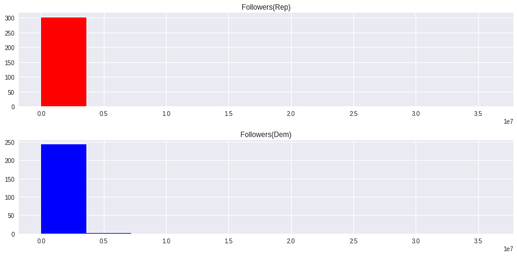
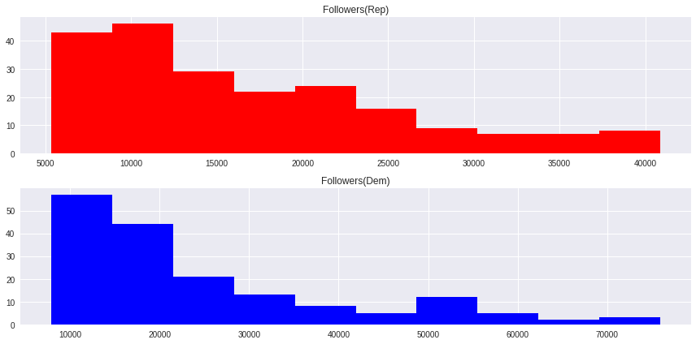
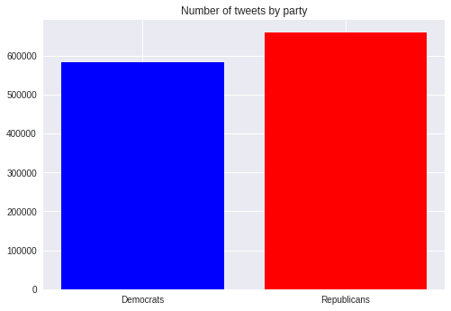
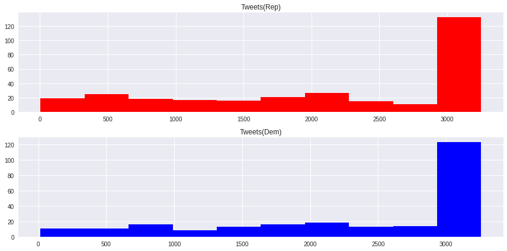
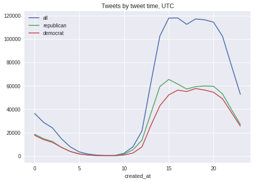
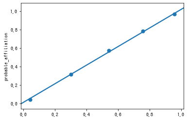

<!DOCTYPE html>
<html lang="en">

<head>
            <meta charset="utf-8">
        <meta http-equiv="X-UA-Compatible" content="IE=edge">
        <meta name="viewport" content="width=device-width, initial-scale=1">
        <meta name="description" content="">
        <meta name="author" content="">

        <title>Kateryna Kasianenko's Portfolio</title>

            <link href="https://katkasian.github.io/feeds/all.atom.xml" type="application/atom+xml" rel="alternate" title="Kateryna Kasianenko's Portfolio Full Atom Feed" />
            <link href="https://katkasian.github.io/feeds/python.atom.xml" type="application/atom+xml" rel="alternate" title="Kateryna Kasianenko's Portfolio Categories Atom Feed" />

        <!-- Bootstrap Core CSS -->
        <link href="https://katkasian.github.io/theme/css/bootstrap.min.css" rel="stylesheet">

        <!-- Custom CSS -->
        <link href="https://katkasian.github.io/theme/css/clean-blog.min.css" rel="stylesheet">

        <!-- Code highlight color scheme -->
            <link href="https://katkasian.github.io/theme/css/code_blocks/darkly.css" rel="stylesheet">

        <!-- Custom Fonts -->
        <link href="http://maxcdn.bootstrapcdn.com/font-awesome/4.1.0/css/font-awesome.min.css" rel="stylesheet" type="text/css">
        <link href='http://fonts.googleapis.com/css?family=Lora:400,700,400italic,700italic' rel='stylesheet' type='text/css'>
        <link href='http://fonts.googleapis.com/css?family=Open+Sans:300italic,400italic,600italic,700italic,800italic,400,300,600,700,800' rel='stylesheet' type='text/css'>

        <!-- HTML5 Shim and Respond.js IE8 support of HTML5 elements and media queries -->
        <!-- WARNING: Respond.js doesn't work if you view the page via file:// -->
        <!--[if lt IE 9]>
            <script src="https://oss.maxcdn.com/libs/html5shiv/3.7.0/html5shiv.js"></script>
            <script src="https://oss.maxcdn.com/libs/respond.js/1.4.2/respond.min.js"></script>
        <![endif]-->


			<meta property="og:locale" content="en">
		<meta property="og:site_name" content="Kateryna Kasianenko's Portfolio">

	<meta property="og:type" content="article">
	<meta property="article:author" content="">
	<meta property="og:url" content="https://katkasian.github.io/polarization-twitter.html">
	<meta property="og:title" content="Polarization of US Political Twitter: Predicting Political Affiliation through Tweets">
	<meta property="og:description" content="">
	<meta property="og:image" content="https://katkasian.github.io/siteImages/capitol.jpg">
	<meta property="article:published_time" content="2020-03-30 00:00:00+11:00">
</head>

<body>

    <!-- Navigation -->
    <nav class="navbar navbar-default navbar-custom navbar-fixed-top">
        <div class="container-fluid">
            <!-- Brand and toggle get grouped for better mobile display -->
            <div class="navbar-header page-scroll">
                <button type="button" class="navbar-toggle" data-toggle="collapse" data-target="#bs-example-navbar-collapse-1">
                    <span class="sr-only">Toggle navigation</span>
                    <span class="icon-bar"></span>
                    <span class="icon-bar"></span>
                    <span class="icon-bar"></span>
                </button>
                <a class="navbar-brand" href="https://katkasian.github.io/">Kateryna Kasianenko's Portfolio</a>
            </div>

            <!-- Collect the nav links, forms, and other content for toggling -->
            <div class="collapse navbar-collapse" id="bs-example-navbar-collapse-1">
                <ul class="nav navbar-nav navbar-right">

                </ul>
            </div>
            <!-- /.navbar-collapse -->
        </div>
        <!-- /.container -->
    </nav>

    <!-- Page Header -->
        <header class="intro-header" style="background-image: url('siteImages/capitol.jpg')">
        <div class="container">
            <div class="row">
                <div class="col-lg-8 col-lg-offset-2 col-md-10 col-md-offset-1">
                    <div class="post-heading">
                        <h1>Polarization of US Political Twitter: Predicting Political Affiliation through Tweets</h1>
                        <span class="meta">Posted by
                                <a href="https://katkasian.github.io/author/kateryna-kasianenko.html">Kateryna Kasianenko</a>
                             on Mon 30 March 2020
                        </span>
                        
                    </div>
                </div>
            </div>
        </div>
    </header>

    <!-- Main Content -->
    <div class="container">
        <div class="row">
            <div class="col-lg-8 col-lg-offset-2 col-md-10 col-md-offset-1">
    <!-- Post Content -->
    <article>
        <p>USA's political partisanship problem, lamented for a long time, affects the country citizens in unpredictable ways - a recent <a href="https://www.vox.com/science-and-health/2020/3/31/21199271/coronavirus-in-us-trump-republicans-democrats-survey-epistemic-crisis">study</a> suggests the level of partisanship is the strongest predictor for coronavirus response. But how to gauge the gravity of this issue emprically? Inspired by Professor Elliot Ash (see his related work <a href="https://papers.ssrn.com/sol3/papers.cfm?abstract_id=3205116">here</a>), whose workshop I attended during <a href="http://www.comptextconference.org/2nd-annual-poltext-conference-2019/">POLTEXT conference</a> in September 2019, I attempted predicting political affiliation of users included in 2008-2017 US Congressional Tweets Dataset (Senators, Governors and one President) based on metrics engineered from their tweets. One of the most interesting challenges of this project was the lack of affiliation information in the data - this had to be scraped from Wikipedia. I managed to achieve best results through training a logistic regression classifier with accuracy above 80% for both train and test sets on a matrix of tf-idf-weighted bigrams and unigrams of the users' tweet texts. This high accuracy of prediction based only on the text of tweets suggest that at least within the platform, the level of partisanship is high.</p>
<h1><strong>Project's aim</strong>:</h1>
<blockquote>
<p><em>Attempting to predict a politician's affiliation based on her tweets</em></p>
<p><em>High accuracy of such prediction will suggest high levels of polarization of American politics</em></p>
</blockquote>
<h2>Data Exploration</h2>
<div class="highlight"><pre><span></span><span class="c1">#mouting drive</span>
<span class="kn">from</span> <span class="nn">google.colab</span> <span class="kn">import</span> <span class="n">drive</span>
<span class="n">drive</span><span class="o">.</span><span class="n">mount</span><span class="p">(</span><span class="s1">&#39;/content/drive&#39;</span><span class="p">)</span>
</pre></div>


<div class="highlight"><pre><span></span>Go to this URL in a browser: https://accounts.google.com/o/oauth2/auth?client_id=947318989803-6bn6qk8qdgf4n4g3pfee6491hc0brc4i.apps.googleusercontent.com&amp;redirect_uri=urn%3aietf%3awg%3aoauth%3a2.0%3aoob&amp;response_type=code&amp;scope=email%20https%3a%2f%2fwww.googleapis.com%2fauth%2fdocs.test%20https%3a%2f%2fwww.googleapis.com%2fauth%2fdrive%20https%3a%2f%2fwww.googleapis.com%2fauth%2fdrive.photos.readonly%20https%3a%2f%2fwww.googleapis.com%2fauth%2fpeopleapi.readonly

Enter your authorization code:
··········
Mounted at /content/drive
</pre></div>


<div class="highlight"><pre><span></span><span class="o">%</span><span class="n">cd</span> <span class="s2">&quot;/content/drive/My Drive/datasets&quot;</span>
</pre></div>


<div class="highlight"><pre><span></span>/content/drive/My Drive/datasets
</pre></div>


<div class="highlight"><pre><span></span><span class="c1">#installing libraries not supported by Google Colab</span>
<span class="o">%</span><span class="n">pip</span> <span class="n">install</span> <span class="n">mediawiki</span>
<span class="o">%</span><span class="n">pip</span> <span class="n">install</span> <span class="n">wikipedia</span>
</pre></div>


<div class="highlight"><pre><span></span>Collecting wikipedia
  Downloading https://files.pythonhosted.org/packages/67/35/25e68fbc99e672127cc6fbb14b8ec1ba3dfef035bf1e4c90f78f24a80b7d/wikipedia-1.4.0.tar.gz
Requirement already satisfied: beautifulsoup4 in /usr/local/lib/python3.6/dist-packages (from wikipedia) (4.6.3)
Requirement already satisfied: requests&lt;3.0.0,&gt;=2.0.0 in /usr/local/lib/python3.6/dist-packages (from wikipedia) (2.21.0)
Requirement already satisfied: urllib3&lt;1.25,&gt;=1.21.1 in /usr/local/lib/python3.6/dist-packages (from requests&lt;3.0.0,&gt;=2.0.0-&gt;wikipedia) (1.24.3)
Requirement already satisfied: certifi&gt;=2017.4.17 in /usr/local/lib/python3.6/dist-packages (from requests&lt;3.0.0,&gt;=2.0.0-&gt;wikipedia) (2020.4.5.1)
Requirement already satisfied: idna&lt;2.9,&gt;=2.5 in /usr/local/lib/python3.6/dist-packages (from requests&lt;3.0.0,&gt;=2.0.0-&gt;wikipedia) (2.8)
Requirement already satisfied: chardet&lt;3.1.0,&gt;=3.0.2 in /usr/local/lib/python3.6/dist-packages (from requests&lt;3.0.0,&gt;=2.0.0-&gt;wikipedia) (3.0.4)
Building wheels for collected packages: wikipedia
  Building wheel for wikipedia (setup.py) ... [?25l[?25hdone
  Created wheel for wikipedia: filename=wikipedia-1.4.0-cp36-none-any.whl size=11686 sha256=e36a96052e333b809d6d1e57236a61055242017536b5421f7f56241f3d964fb4
  Stored in directory: /root/.cache/pip/wheels/87/2a/18/4e471fd96d12114d16fe4a446d00c3b38fb9efcb744bd31f4a
Successfully built wikipedia
Installing collected packages: wikipedia
Successfully installed wikipedia-1.4.0
</pre></div>


<div class="highlight"><pre><span></span><span class="c1">#importing libraries necessary for the exploratory analysis</span>
<span class="kn">import</span> <span class="nn">pandas</span> <span class="kn">as</span> <span class="nn">pd</span>
<span class="kn">import</span> <span class="nn">wikipedia</span>
<span class="kn">import</span> <span class="nn">spacy</span>
<span class="kn">import</span> <span class="nn">en_core_web_sm</span>
<span class="kn">from</span> <span class="nn">pprint</span> <span class="kn">import</span> <span class="n">pprint</span>
<span class="n">nlp</span> <span class="o">=</span> <span class="n">en_core_web_sm</span><span class="o">.</span><span class="n">load</span><span class="p">()</span>
</pre></div>


<div class="highlight"><pre><span></span><span class="c1">#reading first table - users</span>
<span class="n">df</span> <span class="o">=</span> <span class="n">pd</span><span class="o">.</span><span class="n">read_csv</span><span class="p">(</span><span class="s2">&quot;usersjoined.csv&quot;</span><span class="p">)</span>
</pre></div>


<div class="highlight"><pre><span></span><span class="n">df</span><span class="o">.</span><span class="n">head</span><span class="p">()</span>
</pre></div>


<div>
<style scoped>
    .dataframe tbody tr th:only-of-type {
        vertical-align: middle;
    }

    .dataframe tbody tr th {
        vertical-align: top;
    }

    .dataframe thead th {
        text-align: right;
    }
</style>
<table border="1" class="dataframe">
  <thead>
    <tr style="text-align: right;">
      <th></th>
      <th>id</th>
      <th>screen_name</th>
      <th>name</th>
      <th>description</th>
      <th>followers</th>
      <th>follows</th>
      <th>joined</th>
      <th>tweet_count</th>
    </tr>
  </thead>
  <tbody>
    <tr>
      <th>0</th>
      <td>787373558</td>
      <td>RepCummings</td>
      <td>Elijah E. Cummings</td>
      <td>U.S. Representative from Maryland's 7th Distri...</td>
      <td>104521</td>
      <td>1611</td>
      <td>2012-08-28 16:37:01</td>
      <td>3231.0</td>
    </tr>
    <tr>
      <th>1</th>
      <td>798973032362606600</td>
      <td>RepValDemings</td>
      <td>Rep. Val Demings</td>
      <td>U.S. Representative Florida's 10th Congression...</td>
      <td>3498</td>
      <td>180</td>
      <td>2016-11-16 19:36:29</td>
      <td>689.0</td>
    </tr>
    <tr>
      <th>2</th>
      <td>237814920</td>
      <td>RepHultgren</td>
      <td>Rep. Randy Hultgren</td>
      <td>Member of Congress proudly representing IL-14....</td>
      <td>14074</td>
      <td>1859</td>
      <td>2011-01-13 18:03:42</td>
      <td>3226.0</td>
    </tr>
    <tr>
      <th>3</th>
      <td>1064206014</td>
      <td>TulsiPress</td>
      <td>Rep. Tulsi Gabbard</td>
      <td>Aloha - Official account of Rep Tulsi Gabbard ...</td>
      <td>72270</td>
      <td>1125</td>
      <td>2013-01-05 22:57:50</td>
      <td>2593.0</td>
    </tr>
    <tr>
      <th>4</th>
      <td>72198806</td>
      <td>SenGillibrand</td>
      <td>Kirsten Gillibrand</td>
      <td>Theo and Henry's mom, U.S. Senator from New Yo...</td>
      <td>396587</td>
      <td>488</td>
      <td>2009-09-07 03:53:24</td>
      <td>3210.0</td>
    </tr>
  </tbody>
</table>
</div>

<h3>Scraping party affiliation of politicians from Wikipedia</h3>
<div class="highlight"><pre><span></span><span class="c1">#there are two main challenges with the data at this stage: not many users include</span>
<span class="c1">#their political affiliation in the description, but many add titles such as </span>
<span class="c1">#&quot;Rep.&quot; to their name. To perform scraping in order to define political affiliation,</span>
<span class="c1">#we first need to clean up users&#39; names.</span>
<span class="k">def</span> <span class="nf">spacy_name_clean</span><span class="p">(</span><span class="n">some_string</span><span class="p">):</span>
    <span class="sd">&quot;&quot;&quot;Remove up titles (governor, representative) from strings&quot;&quot;&quot;</span>
    <span class="n">tagged_str</span> <span class="o">=</span> <span class="n">nlp</span><span class="p">(</span><span class="n">some_string</span><span class="p">)</span>
    <span class="n">namelist</span> <span class="o">=</span> <span class="p">[</span><span class="n">X</span><span class="o">.</span><span class="n">text</span> <span class="k">for</span> <span class="n">X</span> <span class="ow">in</span> <span class="n">tagged_str</span><span class="o">.</span><span class="n">ents</span> <span class="k">if</span> <span class="n">X</span><span class="o">.</span><span class="n">label_</span> <span class="o">==</span> <span class="s1">&#39;PERSON&#39;</span><span class="p">]</span>
    <span class="k">if</span> <span class="nb">len</span><span class="p">(</span><span class="n">namelist</span><span class="p">)</span> <span class="o">&gt;=</span> <span class="mi">1</span><span class="p">:</span>
        <span class="n">name</span> <span class="o">=</span> <span class="n">namelist</span><span class="p">[</span><span class="mi">0</span><span class="p">]</span>
    <span class="k">else</span><span class="p">:</span>
        <span class="n">name</span> <span class="o">=</span> <span class="n">some_string</span>
    <span class="k">return</span> <span class="n">name</span>

<span class="c1">#testing if it works</span>
<span class="n">clean_name</span> <span class="o">=</span> <span class="n">spacy_name_clean</span><span class="p">(</span><span class="s2">&quot;Rep. Val Demings&quot;</span><span class="p">)</span>
<span class="k">print</span><span class="p">(</span><span class="n">clean_name</span><span class="p">)</span>
</pre></div>


<div class="highlight"><pre><span></span>Val Demings
</pre></div>


<div class="highlight"><pre><span></span><span class="c1">#applying the function on the dataframe</span>
<span class="n">df</span><span class="p">[</span><span class="s2">&quot;cleaned_names&quot;</span><span class="p">]</span> <span class="o">=</span> <span class="n">df</span><span class="o">.</span><span class="n">name</span><span class="o">.</span><span class="n">apply</span><span class="p">(</span><span class="n">spacy_name_clean</span><span class="p">)</span>
</pre></div>


<div class="highlight"><pre><span></span><span class="n">df</span><span class="o">.</span><span class="n">head</span><span class="p">()</span>
</pre></div>


<div>
<style scoped>
    .dataframe tbody tr th:only-of-type {
        vertical-align: middle;
    }

    .dataframe tbody tr th {
        vertical-align: top;
    }

    .dataframe thead th {
        text-align: right;
    }
</style>
<table border="1" class="dataframe">
  <thead>
    <tr style="text-align: right;">
      <th></th>
      <th>id</th>
      <th>screen_name</th>
      <th>name</th>
      <th>description</th>
      <th>followers</th>
      <th>follows</th>
      <th>joined</th>
      <th>tweet_count</th>
      <th>cleaned_names</th>
    </tr>
  </thead>
  <tbody>
    <tr>
      <th>0</th>
      <td>787373558</td>
      <td>RepCummings</td>
      <td>Elijah E. Cummings</td>
      <td>U.S. Representative from Maryland's 7th Distri...</td>
      <td>104521</td>
      <td>1611</td>
      <td>2012-08-28 16:37:01</td>
      <td>3231.0</td>
      <td>Elijah E. Cummings</td>
    </tr>
    <tr>
      <th>1</th>
      <td>798973032362606600</td>
      <td>RepValDemings</td>
      <td>Rep. Val Demings</td>
      <td>U.S. Representative Florida's 10th Congression...</td>
      <td>3498</td>
      <td>180</td>
      <td>2016-11-16 19:36:29</td>
      <td>689.0</td>
      <td>Val Demings</td>
    </tr>
    <tr>
      <th>2</th>
      <td>237814920</td>
      <td>RepHultgren</td>
      <td>Rep. Randy Hultgren</td>
      <td>Member of Congress proudly representing IL-14....</td>
      <td>14074</td>
      <td>1859</td>
      <td>2011-01-13 18:03:42</td>
      <td>3226.0</td>
      <td>Randy Hultgren</td>
    </tr>
    <tr>
      <th>3</th>
      <td>1064206014</td>
      <td>TulsiPress</td>
      <td>Rep. Tulsi Gabbard</td>
      <td>Aloha - Official account of Rep Tulsi Gabbard ...</td>
      <td>72270</td>
      <td>1125</td>
      <td>2013-01-05 22:57:50</td>
      <td>2593.0</td>
      <td>Tulsi Gabbard</td>
    </tr>
    <tr>
      <th>4</th>
      <td>72198806</td>
      <td>SenGillibrand</td>
      <td>Kirsten Gillibrand</td>
      <td>Theo and Henry's mom, U.S. Senator from New Yo...</td>
      <td>396587</td>
      <td>488</td>
      <td>2009-09-07 03:53:24</td>
      <td>3210.0</td>
      <td>Kirsten Gillibrand</td>
    </tr>
  </tbody>
</table>
</div>

<div class="highlight"><pre><span></span><span class="c1">#importing libraries necessary to scrape wikipedia</span>
<span class="kn">from</span> <span class="nn">bs4</span> <span class="kn">import</span> <span class="n">BeautifulSoup</span>
<span class="kn">import</span> <span class="nn">urllib.request</span><span class="o">,</span> <span class="nn">urllib.parse</span><span class="o">,</span> <span class="nn">urllib.error</span>
<span class="kn">from</span> <span class="nn">mediawiki</span> <span class="kn">import</span> <span class="n">MediaWiki</span>
<span class="kn">import</span> <span class="nn">ssl</span>
<span class="kn">import</span> <span class="nn">re</span>


<span class="n">ctx</span> <span class="o">=</span> <span class="n">ssl</span><span class="o">.</span><span class="n">create_default_context</span><span class="p">()</span>
<span class="n">ctx</span><span class="o">.</span><span class="n">check_hostname</span> <span class="o">=</span> <span class="bp">False</span>
<span class="n">ctx</span><span class="o">.</span><span class="n">verify_mode</span> <span class="o">=</span> <span class="n">ssl</span><span class="o">.</span><span class="n">CERT_NONE</span>
</pre></div>


<div class="highlight"><pre><span></span><span class="k">def</span> <span class="nf">polit_affil_through_wiki</span><span class="p">(</span><span class="n">name</span><span class="p">):</span>
    <span class="k">try</span><span class="p">:</span>
        <span class="n">wikipedia</span> <span class="o">=</span> <span class="n">MediaWiki</span><span class="p">(</span><span class="n">user_agent</span> <span class="o">=</span> <span class="s1">&#39;pyMediaWiki-User-Agent-String1&#39;</span><span class="p">)</span>
        <span class="n">search_res</span> <span class="o">=</span> <span class="n">wikipedia</span><span class="o">.</span><span class="n">search</span><span class="p">(</span><span class="n">name</span><span class="p">)</span>
        <span class="n">result</span> <span class="o">=</span> <span class="n">search_res</span><span class="p">[</span><span class="mi">0</span><span class="p">]</span>
        <span class="n">page</span> <span class="o">=</span> <span class="n">wikipedia</span><span class="o">.</span><span class="n">page</span><span class="p">(</span><span class="n">result</span><span class="p">)</span>
        <span class="n">url</span> <span class="o">=</span> <span class="n">page</span><span class="o">.</span><span class="n">url</span>

        <span class="n">html</span> <span class="o">=</span> <span class="n">urllib</span><span class="o">.</span><span class="n">request</span><span class="o">.</span><span class="n">urlopen</span><span class="p">(</span><span class="n">url</span><span class="p">,</span> <span class="n">context</span><span class="o">=</span><span class="n">ctx</span><span class="p">)</span><span class="o">.</span><span class="n">read</span><span class="p">()</span>
        <span class="n">soup</span> <span class="o">=</span> <span class="n">BeautifulSoup</span><span class="p">(</span><span class="n">html</span><span class="p">,</span> <span class="s1">&#39;lxml&#39;</span><span class="p">)</span>

        <span class="n">my_table</span> <span class="o">=</span> <span class="n">soup</span><span class="o">.</span><span class="n">find</span><span class="p">(</span><span class="s1">&#39;table&#39;</span><span class="p">,</span> <span class="p">{</span><span class="s1">&#39;class&#39;</span><span class="p">:</span><span class="s1">&#39;infobox vcard&#39;</span><span class="p">})</span>
        <span class="n">res</span> <span class="o">=</span> <span class="n">re</span><span class="o">.</span><span class="n">findall</span><span class="p">(</span><span class="sa">r</span><span class="s1">&#39;Political party&lt;/th&gt;.+?\&quot;&gt;(.+?)&lt;/a&gt;&lt;/td&gt;&lt;/tr&gt;&lt;tr&gt;&lt;th scope?&#39;</span><span class="p">,</span> <span class="nb">str</span><span class="p">(</span><span class="n">my_table</span><span class="p">))</span>
        <span class="n">likely_res</span> <span class="o">=</span> <span class="n">res</span><span class="p">[</span><span class="mi">0</span><span class="p">]</span>
        <span class="k">if</span> <span class="nb">len</span><span class="p">(</span><span class="n">likely_res</span><span class="p">)</span> <span class="o">&gt;</span> <span class="mi">10</span><span class="p">:</span>
            <span class="n">text</span> <span class="o">=</span> <span class="n">likely_res</span><span class="o">.</span><span class="n">split</span><span class="p">(</span><span class="s2">&quot;&lt;/a&gt;&quot;</span><span class="p">)</span>
            <span class="n">likely_res</span> <span class="o">=</span> <span class="n">text</span><span class="p">[</span><span class="mi">0</span><span class="p">]</span>
        <span class="k">return</span> <span class="n">likely_res</span>
    <span class="k">except</span><span class="p">:</span>
        <span class="k">return</span> <span class="n">np</span><span class="o">.</span><span class="n">nan</span>
</pre></div>


<div class="highlight"><pre><span></span><span class="c1">#checking if it works</span>
<span class="n">polit_affil_through_wiki</span><span class="p">(</span><span class="s2">&quot;Jerry Seinfeld&quot;</span><span class="p">)</span>
</pre></div>


<div class="highlight"><pre><span></span>nan
</pre></div>


<div class="highlight"><pre><span></span><span class="n">df</span><span class="p">[</span><span class="s2">&quot;likely_affiliation&quot;</span><span class="p">]</span> <span class="o">=</span> <span class="n">df</span><span class="o">.</span><span class="n">cleaned_names</span><span class="o">.</span><span class="n">apply</span><span class="p">(</span><span class="n">polit_affil_through_wiki</span><span class="p">)</span>
</pre></div>


<div class="highlight"><pre><span></span><span class="c1">#checking how many times scraping failed</span>
<span class="n">df</span><span class="o">.</span><span class="n">info</span><span class="p">()</span>
</pre></div>


<div class="highlight"><pre><span></span>&lt;class &#39;pandas.core.frame.DataFrame&#39;&gt;
RangeIndex: 548 entries, 0 to 547
Data columns (total 10 columns):
id                    548 non-null int64
screen_name           548 non-null object
name                  548 non-null object
description           539 non-null object
followers             548 non-null int64
follows               548 non-null int64
joined                545 non-null object
tweet_count           545 non-null float64
cleaned_names         548 non-null object
likely_affiliation    472 non-null object
dtypes: float64(1), int64(3), object(6)
memory usage: 42.9+ KB
</pre></div>


<div class="highlight"><pre><span></span><span class="n">noaffil</span> <span class="o">=</span> <span class="n">df</span><span class="p">[</span><span class="n">df</span><span class="o">.</span><span class="n">likely_affiliation</span><span class="o">.</span><span class="n">isna</span><span class="p">()]</span>
</pre></div>


<div class="highlight"><pre><span></span><span class="n">noaffil</span><span class="p">[</span><span class="n">noaffil</span><span class="o">.</span><span class="n">name</span><span class="o">.</span><span class="n">str</span><span class="o">.</span><span class="n">contains</span><span class="p">(</span><span class="s2">&quot;U.S.Rep Gonzalez&quot;</span><span class="p">)]</span>
</pre></div>


<div>
<style scoped>
    .dataframe tbody tr th:only-of-type {
        vertical-align: middle;
    }

    .dataframe tbody tr th {
        vertical-align: top;
    }

    .dataframe thead th {
        text-align: right;
    }
</style>
<table border="1" class="dataframe">
  <thead>
    <tr style="text-align: right;">
      <th></th>
      <th>id</th>
      <th>screen_name</th>
      <th>name</th>
      <th>description</th>
      <th>followers</th>
      <th>follows</th>
      <th>joined</th>
      <th>tweet_count</th>
      <th>cleaned_names</th>
      <th>likely_affiliation</th>
    </tr>
  </thead>
  <tbody>
    <tr>
      <th>450</th>
      <td>818536152588238849</td>
      <td>RepGonzalez</td>
      <td>U.S.Rep Gonzalez</td>
      <td>Representing the 15th District of Texas in US Congress, public servant, man of the people, lawyer, friend, business owner. #TX15GettingItRight</td>
      <td>437</td>
      <td>10</td>
      <td>2017-01-09 19:13:21</td>
      <td>16.0</td>
      <td>Gonzalez</td>
      <td>NaN</td>
    </tr>
  </tbody>
</table>
</div>

<div class="highlight"><pre><span></span><span class="c1">#these names have to be inserted manually</span>
<span class="n">list_for_input</span> <span class="o">=</span> <span class="n">noaffil</span><span class="o">.</span><span class="n">name</span>
</pre></div>


<div class="highlight"><pre><span></span><span class="n">names_to_aff</span> <span class="o">=</span> <span class="p">{}</span>
</pre></div>


<div class="highlight"><pre><span></span><span class="k">for</span> <span class="n">item</span> <span class="ow">in</span> <span class="n">list_for_input</span><span class="p">:</span>
    <span class="n">inputres</span> <span class="o">=</span> <span class="nb">input</span><span class="p">(</span><span class="n">item</span><span class="p">)</span>
    <span class="k">if</span> <span class="n">inputres</span> <span class="o">==</span> <span class="s2">&quot;r&quot;</span><span class="p">:</span>
        <span class="n">party</span> <span class="o">=</span> <span class="s2">&quot;Republican&quot;</span>
    <span class="k">elif</span> <span class="n">inputres</span> <span class="o">==</span> <span class="s2">&quot;d&quot;</span><span class="p">:</span>
        <span class="n">party</span> <span class="o">=</span> <span class="s2">&quot;Democratic&quot;</span>
    <span class="k">else</span><span class="p">:</span>
        <span class="n">party</span> <span class="o">=</span> <span class="s2">&quot;Independent&quot;</span>
    <span class="n">names_to_aff</span><span class="p">[</span><span class="n">item</span><span class="p">]</span> <span class="o">=</span> <span class="n">party</span>
</pre></div>


<div class="highlight"><pre><span></span><span class="n">names_to_aff</span>
</pre></div>


<div class="highlight"><pre><span></span><span class="n">names_to_aff</span><span class="p">[</span><span class="s1">&#39;U.S.Rep Gonzalez&#39;</span><span class="p">]</span> <span class="o">=</span> <span class="s1">&#39;Democratic&#39;</span>
</pre></div>


<div class="highlight"><pre><span></span><span class="c1">#mapping the created dictionary to the existing dataframe</span>
<span class="n">df_cp</span> <span class="o">=</span> <span class="n">df</span><span class="o">.</span><span class="n">copy</span><span class="p">(</span><span class="n">deep</span><span class="o">=</span><span class="bp">True</span><span class="p">)</span>
</pre></div>


<div class="highlight"><pre><span></span><span class="n">df_cp</span><span class="o">.</span><span class="n">set_index</span><span class="p">(</span><span class="n">df_cp</span><span class="o">.</span><span class="n">name</span><span class="p">,</span> <span class="n">inplace</span> <span class="o">=</span> <span class="bp">True</span><span class="p">)</span>
</pre></div>


<div class="highlight"><pre><span></span><span class="n">not_na</span> <span class="o">=</span> <span class="n">df_cp</span><span class="o">.</span><span class="n">loc</span><span class="p">[</span><span class="o">~</span><span class="n">df_cp</span><span class="o">.</span><span class="n">likely_affiliation</span><span class="o">.</span><span class="n">isna</span><span class="p">()]</span>
</pre></div>


<div class="highlight"><pre><span></span><span class="n">aff_dict</span> <span class="o">=</span> <span class="n">not_na</span><span class="o">.</span><span class="n">likely_affiliation</span><span class="o">.</span><span class="n">to_dict</span><span class="p">()</span>
</pre></div>


<div class="highlight"><pre><span></span><span class="n">aff_dict</span><span class="o">.</span><span class="n">update</span><span class="p">(</span><span class="n">names_to_aff</span><span class="p">)</span>
</pre></div>


<div class="highlight"><pre><span></span><span class="nb">len</span><span class="p">(</span><span class="n">aff_dict</span><span class="o">.</span><span class="n">keys</span><span class="p">())</span> <span class="o">==</span> <span class="n">df_cp</span><span class="o">.</span><span class="n">shape</span><span class="p">[</span><span class="mi">0</span><span class="p">]</span>
</pre></div>


<div class="highlight"><pre><span></span>True
</pre></div>


<div class="highlight"><pre><span></span><span class="n">df_cp</span><span class="p">[</span><span class="s1">&#39;probable_affiliation&#39;</span><span class="p">]</span> <span class="o">=</span> <span class="n">df_cp</span><span class="o">.</span><span class="n">index</span><span class="o">.</span><span class="n">map</span><span class="p">(</span><span class="n">aff_dict</span><span class="p">)</span>
</pre></div>


<div class="highlight"><pre><span></span><span class="n">df_cp</span> <span class="o">=</span> <span class="n">df_cp</span><span class="o">.</span><span class="n">drop</span><span class="p">(</span><span class="s1">&#39;likely_affiliation&#39;</span><span class="p">,</span> <span class="n">axis</span> <span class="o">=</span> <span class="mi">1</span><span class="p">)</span>
</pre></div>


<div class="highlight"><pre><span></span><span class="c1">#checking the results</span>
<span class="n">df_cp</span><span class="o">.</span><span class="n">probable_affiliation</span><span class="o">.</span><span class="n">value_counts</span><span class="p">()</span>
</pre></div>


<div class="highlight"><pre><span></span>Republican     302
Democratic     244
Independent    1  
Federalist     1  
Name: probable_affiliation, dtype: int64
</pre></div>


<div class="highlight"><pre><span></span><span class="c1">#it appears we got the wrong Daniel Webster</span>
<span class="n">df_cp</span><span class="o">.</span><span class="n">loc</span><span class="p">[</span><span class="n">df_cp</span><span class="o">.</span><span class="n">probable_affiliation</span><span class="o">==</span><span class="s2">&quot;Federalist&quot;</span><span class="p">]</span>
</pre></div>


<div>
<style scoped>
    .dataframe tbody tr th:only-of-type {
        vertical-align: middle;
    }

    .dataframe tbody tr th {
        vertical-align: top;
    }

    .dataframe thead th {
        text-align: right;
    }
</style>
<table border="1" class="dataframe">
  <thead>
    <tr style="text-align: right;">
      <th></th>
      <th>id</th>
      <th>screen_name</th>
      <th>name</th>
      <th>description</th>
      <th>followers</th>
      <th>follows</th>
      <th>joined</th>
      <th>tweet_count</th>
      <th>cleaned_names</th>
      <th>probable_affiliation</th>
    </tr>
    <tr>
      <th>name</th>
      <th></th>
      <th></th>
      <th></th>
      <th></th>
      <th></th>
      <th></th>
      <th></th>
      <th></th>
      <th></th>
      <th></th>
    </tr>
  </thead>
  <tbody>
    <tr>
      <th>Daniel Webster</th>
      <td>281540744</td>
      <td>RepWebster</td>
      <td>Daniel Webster</td>
      <td>A family man and small-business owner who is dedicated to serving the citizens of Central Florida with honor and integrity.</td>
      <td>14057</td>
      <td>267</td>
      <td>2011-04-13 13:47:05</td>
      <td>2939.0</td>
      <td>Daniel Webster</td>
      <td>Federalist</td>
    </tr>
  </tbody>
</table>
</div>

<div class="highlight"><pre><span></span><span class="n">df_cp</span><span class="o">.</span><span class="n">loc</span><span class="p">[</span><span class="s2">&quot;Daniel Webster&quot;</span><span class="p">,</span> <span class="s2">&quot;probable_affiliation&quot;</span><span class="p">]</span> <span class="o">=</span> <span class="s2">&quot;Republican&quot;</span>
</pre></div>


<div class="highlight"><pre><span></span><span class="n">df_cp</span><span class="o">.</span><span class="n">probable_affiliation</span><span class="o">.</span><span class="n">value_counts</span><span class="p">()</span>
</pre></div>


<div class="highlight"><pre><span></span>Republican     303
Democratic     244
Independent    1  
Name: probable_affiliation, dtype: int64
</pre></div>


<div class="highlight"><pre><span></span><span class="c1">#saving the results</span>
<span class="n">df_cp</span><span class="o">.</span><span class="n">to_csv</span><span class="p">(</span><span class="s1">&#39;with_affiliation.csv&#39;</span><span class="p">)</span>
</pre></div>


<div class="highlight"><pre><span></span><span class="n">test</span> <span class="o">=</span> <span class="n">pd</span><span class="o">.</span><span class="n">read_csv</span><span class="p">(</span><span class="s2">&quot;with_affiliation.csv&quot;</span><span class="p">,</span> <span class="n">index_col</span> <span class="o">=</span> <span class="mi">0</span><span class="p">)</span>
</pre></div>


<div class="highlight"><pre><span></span><span class="n">test</span><span class="o">.</span><span class="n">head</span><span class="p">()</span>
</pre></div>


<div>
<style scoped>
    .dataframe tbody tr th:only-of-type {
        vertical-align: middle;
    }

    .dataframe tbody tr th {
        vertical-align: top;
    }

    .dataframe thead th {
        text-align: right;
    }
</style>
<table border="1" class="dataframe">
  <thead>
    <tr style="text-align: right;">
      <th></th>
      <th>id</th>
      <th>screen_name</th>
      <th>description</th>
      <th>followers</th>
      <th>follows</th>
      <th>joined</th>
      <th>tweet_count</th>
      <th>cleaned_names</th>
      <th>probable_affiliation</th>
    </tr>
    <tr>
      <th>name</th>
      <th></th>
      <th></th>
      <th></th>
      <th></th>
      <th></th>
      <th></th>
      <th></th>
      <th></th>
      <th></th>
    </tr>
  </thead>
  <tbody>
    <tr>
      <th>Elijah E. Cummings</th>
      <td>787373558</td>
      <td>RepCummings</td>
      <td>U.S. Representative from Maryland's 7th Distri...</td>
      <td>104521</td>
      <td>1611</td>
      <td>2012-08-28 16:37:01</td>
      <td>3231.0</td>
      <td>Elijah E. Cummings</td>
      <td>Democratic</td>
    </tr>
    <tr>
      <th>Rep. Val Demings</th>
      <td>798973032362606600</td>
      <td>RepValDemings</td>
      <td>U.S. Representative Florida's 10th Congression...</td>
      <td>3498</td>
      <td>180</td>
      <td>2016-11-16 19:36:29</td>
      <td>689.0</td>
      <td>Val Demings</td>
      <td>Democratic</td>
    </tr>
    <tr>
      <th>Rep. Randy Hultgren</th>
      <td>237814920</td>
      <td>RepHultgren</td>
      <td>Member of Congress proudly representing IL-14....</td>
      <td>14074</td>
      <td>1859</td>
      <td>2011-01-13 18:03:42</td>
      <td>3226.0</td>
      <td>Randy Hultgren</td>
      <td>Republican</td>
    </tr>
    <tr>
      <th>Rep. Tulsi Gabbard</th>
      <td>1064206014</td>
      <td>TulsiPress</td>
      <td>Aloha - Official account of Rep Tulsi Gabbard ...</td>
      <td>72270</td>
      <td>1125</td>
      <td>2013-01-05 22:57:50</td>
      <td>2593.0</td>
      <td>Tulsi Gabbard</td>
      <td>Democratic</td>
    </tr>
    <tr>
      <th>Kirsten Gillibrand</th>
      <td>72198806</td>
      <td>SenGillibrand</td>
      <td>Theo and Henry's mom, U.S. Senator from New Yo...</td>
      <td>396587</td>
      <td>488</td>
      <td>2009-09-07 03:53:24</td>
      <td>3210.0</td>
      <td>Kirsten Gillibrand</td>
      <td>Democratic</td>
    </tr>
  </tbody>
</table>
</div>

<h2>Visual exploration of the dataset</h2>
<div class="highlight"><pre><span></span><span class="kn">import</span> <span class="nn">matplotlib.pyplot</span> <span class="kn">as</span> <span class="nn">plt</span>
<span class="o">%</span><span class="n">matplotlib</span> <span class="n">inline</span>
</pre></div>


<div class="highlight"><pre><span></span><span class="n">df</span> <span class="o">=</span> <span class="n">pd</span><span class="o">.</span><span class="n">read_csv</span><span class="p">(</span><span class="s2">&quot;with_affiliation.csv&quot;</span><span class="p">)</span>
</pre></div>


<div class="highlight"><pre><span></span><span class="c1">#checking the data</span>
<span class="n">df</span><span class="o">.</span><span class="n">probable_affiliation</span><span class="o">.</span><span class="n">value_counts</span><span class="p">()</span>
</pre></div>


<div class="highlight"><pre><span></span>Republican     303
Democratic     244
Independent      1
Name: probable_affiliation, dtype: int64
</pre></div>


<div class="highlight"><pre><span></span><span class="c1">#dropping the user whose affiliation is not Republican or Democratic </span>
<span class="n">df</span> <span class="o">=</span> <span class="n">df</span><span class="o">.</span><span class="n">loc</span><span class="p">[</span><span class="n">df</span><span class="o">.</span><span class="n">probable_affiliation</span> <span class="o">!=</span> <span class="s2">&quot;Independent&quot;</span><span class="p">]</span>
</pre></div>


<div class="highlight"><pre><span></span><span class="n">df</span><span class="o">.</span><span class="n">probable_affiliation</span><span class="o">.</span><span class="n">value_counts</span><span class="p">()</span>
</pre></div>


<div class="highlight"><pre><span></span>Republican    303
Democratic    244
Name: probable_affiliation, dtype: int64
</pre></div>


<div class="highlight"><pre><span></span><span class="n">df</span><span class="p">[</span><span class="s2">&quot;probable_affiliation&quot;</span><span class="p">]</span> <span class="o">=</span> <span class="n">df</span><span class="o">.</span><span class="n">probable_affiliation</span><span class="o">.</span><span class="n">map</span><span class="p">({</span><span class="s2">&quot;Republican&quot;</span><span class="p">:</span><span class="mi">1</span><span class="p">,</span> <span class="s2">&quot;Democratic&quot;</span><span class="p">:</span><span class="mi">0</span><span class="p">})</span>
</pre></div>


<div class="highlight"><pre><span></span><span class="n">pd</span><span class="o">.</span><span class="n">set_option</span><span class="p">(</span><span class="s2">&quot;display.precision&quot;</span><span class="p">,</span> <span class="mi">2</span><span class="p">)</span>
</pre></div>


<h3>Exploring follower count</h3>
<div class="highlight"><pre><span></span><span class="c1">#getting some descriptive statistics</span>
<span class="k">print</span><span class="p">(</span><span class="s2">&quot;Average followers: &quot;</span><span class="p">,</span> <span class="n">df</span><span class="o">.</span><span class="n">followers</span><span class="o">.</span><span class="n">mean</span><span class="p">())</span>
<span class="k">print</span><span class="p">(</span><span class="s2">&quot;Max followers:&quot;</span><span class="p">,</span> <span class="n">df</span><span class="o">.</span><span class="n">followers</span><span class="o">.</span><span class="n">max</span><span class="p">())</span>
<span class="k">print</span><span class="p">(</span><span class="s2">&quot;User with max followers&quot;</span><span class="p">,</span> <span class="n">df</span><span class="o">.</span><span class="n">loc</span><span class="p">[</span><span class="n">df</span><span class="o">.</span><span class="n">followers</span> <span class="o">==</span> <span class="n">df</span><span class="o">.</span><span class="n">followers</span><span class="o">.</span><span class="n">max</span><span class="p">(),</span> <span class="s2">&quot;name&quot;</span><span class="p">])</span>
<span class="k">print</span><span class="p">(</span><span class="s2">&quot;Min followers:&quot;</span><span class="p">,</span> <span class="n">df</span><span class="o">.</span><span class="n">followers</span><span class="o">.</span><span class="n">min</span><span class="p">())</span>
<span class="k">print</span><span class="p">(</span><span class="s2">&quot;User with min followers&quot;</span><span class="p">,</span> <span class="n">df</span><span class="o">.</span><span class="n">loc</span><span class="p">[</span><span class="n">df</span><span class="o">.</span><span class="n">followers</span> <span class="o">==</span> <span class="n">df</span><span class="o">.</span><span class="n">followers</span><span class="o">.</span><span class="n">min</span><span class="p">(),</span> <span class="s2">&quot;name&quot;</span><span class="p">])</span>
<span class="k">print</span><span class="p">(</span><span class="s2">&quot;Standard deviation&quot;</span><span class="p">,</span> <span class="n">df</span><span class="o">.</span><span class="n">followers</span><span class="o">.</span><span class="n">std</span><span class="p">())</span>
</pre></div>


<div class="highlight"><pre><span></span>Average followers:  163657.02925045704
Max followers: 31712585
User with max followers 478    Donald J. Trump
Name: name, dtype: object
Min followers: 4
User with min followers 141    Jasmine Coleman
Name: name, dtype: object
Standard deviation 1598810.5860084195
</pre></div>


<h3>Exploring follower count by party</h3>
<div class="highlight"><pre><span></span><span class="n">df_rep</span> <span class="o">=</span> <span class="n">df</span><span class="o">.</span><span class="n">loc</span><span class="p">[</span><span class="n">df</span><span class="o">.</span><span class="n">probable_affiliation</span> <span class="o">==</span> <span class="mi">1</span><span class="p">]</span>
<span class="k">print</span><span class="p">(</span><span class="n">df_rep</span><span class="o">.</span><span class="n">shape</span><span class="p">[</span><span class="mi">0</span><span class="p">])</span>
<span class="n">df_dem</span> <span class="o">=</span> <span class="n">df</span><span class="o">.</span><span class="n">loc</span><span class="p">[</span><span class="n">df</span><span class="o">.</span><span class="n">probable_affiliation</span> <span class="o">==</span><span class="mi">0</span><span class="p">]</span>
<span class="k">print</span><span class="p">(</span><span class="n">df_dem</span><span class="o">.</span><span class="n">shape</span><span class="p">[</span><span class="mi">0</span><span class="p">])</span>
</pre></div>


<div class="highlight"><pre><span></span>303
244
</pre></div>


<div class="highlight"><pre><span></span><span class="c1">#Republicans</span>
<span class="k">print</span><span class="p">(</span><span class="s2">&quot;Average followers: &quot;</span><span class="p">,</span> <span class="n">df_rep</span><span class="o">.</span><span class="n">followers</span><span class="o">.</span><span class="n">mean</span><span class="p">())</span>
<span class="k">print</span><span class="p">(</span><span class="s2">&quot;Max followers:&quot;</span><span class="p">,</span> <span class="n">df_rep</span><span class="o">.</span><span class="n">followers</span><span class="o">.</span><span class="n">max</span><span class="p">())</span>
<span class="k">print</span><span class="p">(</span><span class="s2">&quot;User with max followers&quot;</span><span class="p">,</span> <span class="n">df_rep</span><span class="o">.</span><span class="n">loc</span><span class="p">[</span><span class="n">df_rep</span><span class="o">.</span><span class="n">followers</span> <span class="o">==</span> <span class="n">df_rep</span><span class="o">.</span><span class="n">followers</span><span class="o">.</span><span class="n">max</span><span class="p">(),</span> <span class="s2">&quot;name&quot;</span><span class="p">])</span>
<span class="k">print</span><span class="p">(</span><span class="s2">&quot;Min followers:&quot;</span><span class="p">,</span> <span class="n">df_rep</span><span class="o">.</span><span class="n">followers</span><span class="o">.</span><span class="n">min</span><span class="p">())</span>
<span class="k">print</span><span class="p">(</span><span class="s2">&quot;User with min followers&quot;</span><span class="p">,</span> <span class="n">df_rep</span><span class="o">.</span><span class="n">loc</span><span class="p">[</span><span class="n">df_rep</span><span class="o">.</span><span class="n">followers</span> <span class="o">==</span> <span class="n">df_rep</span><span class="o">.</span><span class="n">followers</span><span class="o">.</span><span class="n">min</span><span class="p">(),</span> <span class="s2">&quot;name&quot;</span><span class="p">])</span>
<span class="k">print</span><span class="p">(</span><span class="s2">&quot;Standard deviation&quot;</span><span class="p">,</span> <span class="n">df_rep</span><span class="o">.</span><span class="n">followers</span><span class="o">.</span><span class="n">std</span><span class="p">())</span>
</pre></div>


<div class="highlight"><pre><span></span>Average followers:  217756.65346534652
Max followers: 31712585
User with max followers 478    Donald J. Trump
Name: name, dtype: object
Min followers: 4
User with min followers 141    Jasmine Coleman
Name: name, dtype: object
Standard deviation 2114475.9054823513
</pre></div>


<div class="highlight"><pre><span></span><span class="c1">#democrats</span>
<span class="k">print</span><span class="p">(</span><span class="s2">&quot;Average followers: &quot;</span><span class="p">,</span> <span class="n">df_dem</span><span class="o">.</span><span class="n">followers</span><span class="o">.</span><span class="n">mean</span><span class="p">())</span>
<span class="k">print</span><span class="p">(</span><span class="s2">&quot;Max followers:&quot;</span><span class="p">,</span> <span class="n">df_dem</span><span class="o">.</span><span class="n">followers</span><span class="o">.</span><span class="n">max</span><span class="p">())</span>
<span class="k">print</span><span class="p">(</span><span class="s2">&quot;User with max followers&quot;</span><span class="p">,</span> <span class="n">df_dem</span><span class="o">.</span><span class="n">loc</span><span class="p">[</span><span class="n">df_dem</span><span class="o">.</span><span class="n">followers</span> <span class="o">==</span> <span class="n">df_dem</span><span class="o">.</span><span class="n">followers</span><span class="o">.</span><span class="n">max</span><span class="p">(),</span> <span class="s2">&quot;name&quot;</span><span class="p">])</span>
<span class="k">print</span><span class="p">(</span><span class="s2">&quot;Min followers:&quot;</span><span class="p">,</span> <span class="n">df_dem</span><span class="o">.</span><span class="n">followers</span><span class="o">.</span><span class="n">min</span><span class="p">())</span>
<span class="k">print</span><span class="p">(</span><span class="s2">&quot;User with min followers&quot;</span><span class="p">,</span> <span class="n">df_dem</span><span class="o">.</span><span class="n">loc</span><span class="p">[</span><span class="n">df_dem</span><span class="o">.</span><span class="n">followers</span> <span class="o">==</span> <span class="n">df_dem</span><span class="o">.</span><span class="n">followers</span><span class="o">.</span><span class="n">min</span><span class="p">(),</span> <span class="s2">&quot;name&quot;</span><span class="p">])</span>
<span class="k">print</span><span class="p">(</span><span class="s2">&quot;Standard deviation&quot;</span><span class="p">,</span> <span class="n">df_dem</span><span class="o">.</span><span class="n">followers</span><span class="o">.</span><span class="n">std</span><span class="p">())</span>
</pre></div>


<div class="highlight"><pre><span></span>Average followers:  96475.93852459016
Max followers: 5072538
User with max followers 407    Bernie Sanders
Name: name, dtype: object
Min followers: 41
User with min followers 496    Yvette Clarke
Name: name, dtype: object
Standard deviation 422855.5147283347
</pre></div>


<div class="highlight"><pre><span></span><span class="c1">#plotting the follower distribution by user</span>
<span class="n">fig</span><span class="p">,</span> <span class="n">axs</span> <span class="o">=</span> <span class="n">plt</span><span class="o">.</span><span class="n">subplots</span><span class="p">(</span><span class="mi">2</span><span class="p">,</span><span class="mi">1</span><span class="p">,</span> <span class="n">figsize</span> <span class="o">=</span> <span class="p">(</span><span class="mi">12</span><span class="p">,</span><span class="mi">6</span><span class="p">))</span>
<span class="n">fig</span> <span class="o">=</span> <span class="n">df_rep</span><span class="o">.</span><span class="n">followers</span><span class="o">.</span><span class="n">hist</span><span class="p">(</span><span class="n">color</span> <span class="o">=</span> <span class="s2">&quot;r&quot;</span><span class="p">,</span> <span class="nb">range</span> <span class="o">=</span> <span class="p">(</span><span class="mi">0</span><span class="p">,</span> <span class="mi">36000000</span><span class="p">),</span> <span class="n">ax</span> <span class="o">=</span> <span class="n">axs</span><span class="p">[</span><span class="mi">0</span><span class="p">])</span>
<span class="n">axs</span><span class="p">[</span><span class="mi">0</span><span class="p">]</span><span class="o">.</span><span class="n">set_title</span><span class="p">(</span><span class="s2">&quot;Followers(Rep)&quot;</span><span class="p">)</span>
<span class="n">fig</span> <span class="o">=</span> <span class="n">df_dem</span><span class="o">.</span><span class="n">followers</span><span class="o">.</span><span class="n">hist</span><span class="p">(</span><span class="n">color</span> <span class="o">=</span> <span class="s2">&quot;b&quot;</span><span class="p">,</span> <span class="nb">range</span> <span class="o">=</span> <span class="p">(</span><span class="mi">0</span><span class="p">,</span> <span class="mi">36000000</span><span class="p">),</span> <span class="n">ax</span> <span class="o">=</span> <span class="n">axs</span><span class="p">[</span><span class="mi">1</span><span class="p">])</span>
<span class="n">axs</span><span class="p">[</span><span class="mi">1</span><span class="p">]</span><span class="o">.</span><span class="n">set_title</span><span class="p">(</span><span class="s2">&quot;Followers(Dem)&quot;</span><span class="p">)</span>
<span class="n">plt</span><span class="o">.</span><span class="n">tight_layout</span><span class="p">()</span>
</pre></div>


<p></p>
<div class="highlight"><pre><span></span><span class="c1">#removing outliers</span>
<span class="n">dem_followers_no_outl</span> <span class="o">=</span> <span class="n">df_dem</span><span class="o">.</span><span class="n">loc</span><span class="p">[</span><span class="n">df_dem</span><span class="o">.</span><span class="n">followers</span><span class="o">.</span><span class="n">between</span><span class="p">(</span><span class="n">df_dem</span><span class="o">.</span><span class="n">followers</span><span class="o">.</span><span class="n">quantile</span><span class="p">(</span><span class="o">.</span><span class="mi">15</span><span class="p">),</span> 
                                                            <span class="n">df_dem</span><span class="o">.</span><span class="n">followers</span><span class="o">.</span><span class="n">quantile</span><span class="p">(</span><span class="o">.</span><span class="mi">85</span><span class="p">)),</span> 
                                                            <span class="s2">&quot;followers&quot;</span><span class="p">]</span>
</pre></div>


<div class="highlight"><pre><span></span><span class="n">rep_followers_no_outl</span> <span class="o">=</span> <span class="n">df_rep</span><span class="o">.</span><span class="n">loc</span><span class="p">[</span><span class="n">df_rep</span><span class="o">.</span><span class="n">followers</span><span class="o">.</span><span class="n">between</span><span class="p">(</span><span class="n">df_rep</span><span class="o">.</span><span class="n">followers</span><span class="o">.</span><span class="n">quantile</span><span class="p">(</span><span class="o">.</span><span class="mi">15</span><span class="p">),</span> 
                                                            <span class="n">df_rep</span><span class="o">.</span><span class="n">followers</span><span class="o">.</span><span class="n">quantile</span><span class="p">(</span><span class="o">.</span><span class="mi">85</span><span class="p">)),</span>
                                                            <span class="s2">&quot;followers&quot;</span><span class="p">]</span>
</pre></div>


<div class="highlight"><pre><span></span><span class="n">fig</span><span class="p">,</span> <span class="n">axs</span> <span class="o">=</span> <span class="n">plt</span><span class="o">.</span><span class="n">subplots</span><span class="p">(</span><span class="mi">2</span><span class="p">,</span><span class="mi">1</span><span class="p">,</span> <span class="n">figsize</span> <span class="o">=</span> <span class="p">(</span><span class="mi">12</span><span class="p">,</span><span class="mi">6</span><span class="p">))</span>
<span class="n">fig</span> <span class="o">=</span> <span class="n">rep_followers_no_outl</span><span class="o">.</span><span class="n">hist</span><span class="p">(</span><span class="n">color</span> <span class="o">=</span> <span class="s2">&quot;r&quot;</span><span class="p">,</span> <span class="n">ax</span> <span class="o">=</span> <span class="n">axs</span><span class="p">[</span><span class="mi">0</span><span class="p">])</span>
<span class="n">axs</span><span class="p">[</span><span class="mi">0</span><span class="p">]</span><span class="o">.</span><span class="n">set_title</span><span class="p">(</span><span class="s2">&quot;Followers(Rep)&quot;</span><span class="p">)</span>
<span class="n">fig</span> <span class="o">=</span> <span class="n">dem_followers_no_outl</span><span class="o">.</span><span class="n">hist</span><span class="p">(</span><span class="n">color</span> <span class="o">=</span> <span class="s2">&quot;b&quot;</span><span class="p">,</span> <span class="n">ax</span> <span class="o">=</span> <span class="n">axs</span><span class="p">[</span><span class="mi">1</span><span class="p">])</span>
<span class="n">axs</span><span class="p">[</span><span class="mi">1</span><span class="p">]</span><span class="o">.</span><span class="n">set_title</span><span class="p">(</span><span class="s2">&quot;Followers(Dem)&quot;</span><span class="p">)</span>
<span class="n">plt</span><span class="o">.</span><span class="n">tight_layout</span><span class="p">()</span>
</pre></div>


<p></p>
<p><em>Observation</em>: As distributions of followers for both parties are right-scewed due to some outliers with unusually high amount of followers, this might not be the most helpful metric to look at.</p>
<h2>EXPLORING TWEETS</h2>
<p>We now look at differences at the number of tweets created.</p>
<div class="highlight"><pre><span></span><span class="c1">#reading the tweets table</span>
<span class="n">df</span> <span class="o">=</span> <span class="n">pd</span><span class="o">.</span><span class="n">read_csv</span><span class="p">(</span><span class="s2">&quot;with_dt_aff.csv&quot;</span><span class="p">,</span> <span class="n">names</span> <span class="o">=</span> <span class="p">[</span><span class="s2">&quot;id&quot;</span><span class="p">,</span> <span class="s2">&quot;created_at&quot;</span><span class="p">,</span> <span class="s2">&quot;user_id&quot;</span><span class="p">,</span> <span class="s2">&quot;probable_affiliation&quot;</span><span class="p">])</span>
</pre></div>


<div class="highlight"><pre><span></span><span class="n">df</span><span class="o">.</span><span class="n">head</span><span class="p">()</span>
</pre></div>


<div>
<style scoped>
    .dataframe tbody tr th:only-of-type {
        vertical-align: middle;
    }

    .dataframe tbody tr th {
        vertical-align: top;
    }

    .dataframe thead th {
        text-align: right;
    }
</style>
<table border="1" class="dataframe">
  <thead>
    <tr style="text-align: right;">
      <th></th>
      <th>id</th>
      <th>created_at</th>
      <th>user_id</th>
      <th>probable_affiliation</th>
    </tr>
  </thead>
  <tbody>
    <tr>
      <th>0</th>
      <td>877418565</td>
      <td>2008-08-04 17:28:51</td>
      <td>5558312</td>
      <td>1.0</td>
    </tr>
    <tr>
      <th>1</th>
      <td>879618172</td>
      <td>2008-08-06 19:04:45</td>
      <td>5558312</td>
      <td>1.0</td>
    </tr>
    <tr>
      <th>2</th>
      <td>879695803</td>
      <td>2008-08-06 20:35:36</td>
      <td>5558312</td>
      <td>1.0</td>
    </tr>
    <tr>
      <th>3</th>
      <td>880393665</td>
      <td>2008-08-07 13:52:52</td>
      <td>5558312</td>
      <td>1.0</td>
    </tr>
    <tr>
      <th>4</th>
      <td>880474266</td>
      <td>2008-08-07 15:12:05</td>
      <td>5558312</td>
      <td>1.0</td>
    </tr>
  </tbody>
</table>
</div>

<div class="highlight"><pre><span></span><span class="c1">#separating republican and democratic tweets</span>
</pre></div>


<div class="highlight"><pre><span></span><span class="n">rep_tweets</span> <span class="o">=</span> <span class="n">df</span><span class="o">.</span><span class="n">loc</span><span class="p">[</span><span class="n">df</span><span class="o">.</span><span class="n">probable_affiliation</span> <span class="o">==</span> <span class="mi">1</span><span class="p">]</span><span class="o">.</span><span class="n">copy</span><span class="p">()</span>
</pre></div>


<div class="highlight"><pre><span></span><span class="n">dem_tweets</span> <span class="o">=</span> <span class="n">df</span><span class="o">.</span><span class="n">loc</span><span class="p">[</span><span class="n">df</span><span class="o">.</span><span class="n">probable_affiliation</span> <span class="o">==</span> <span class="mi">0</span><span class="p">]</span><span class="o">.</span><span class="n">copy</span><span class="p">()</span>
</pre></div>


<div class="highlight"><pre><span></span><span class="n">plt</span><span class="o">.</span><span class="n">bar</span><span class="p">([</span><span class="s2">&quot;Democrats&quot;</span><span class="p">,</span> <span class="s2">&quot;Republicans&quot;</span><span class="p">],</span> <span class="n">df</span><span class="o">.</span><span class="n">groupby</span><span class="p">(</span><span class="s2">&quot;probable_affiliation&quot;</span><span class="p">)</span><span class="o">.</span><span class="n">count</span><span class="p">()</span><span class="o">.</span><span class="n">id</span><span class="p">,</span> <span class="n">color</span><span class="o">=</span><span class="p">(</span><span class="s2">&quot;blue&quot;</span><span class="p">,</span> <span class="s2">&quot;r&quot;</span><span class="p">))</span>
<span class="n">plt</span><span class="o">.</span><span class="n">title</span><span class="p">(</span><span class="s2">&quot;Number of tweets by party&quot;</span><span class="p">)</span>
<span class="n">plt</span><span class="o">.</span><span class="n">show</span><span class="p">()</span>
</pre></div>


<p></p>
<h1>EXPLORING DISTRIBUTION OF TWEETS BY USER</h1>
<div class="highlight"><pre><span></span><span class="c1">#grouping tweets by user id</span>
<span class="n">dem_tweets_by_user</span> <span class="o">=</span> <span class="n">dem_tweets</span><span class="o">.</span><span class="n">groupby</span><span class="p">(</span><span class="s2">&quot;user_id&quot;</span><span class="p">)</span><span class="o">.</span><span class="n">count</span><span class="p">()</span><span class="o">.</span><span class="n">id</span>
</pre></div>


<div class="highlight"><pre><span></span><span class="n">rep_tweets_by_user</span> <span class="o">=</span> <span class="n">rep_tweets</span><span class="o">.</span><span class="n">groupby</span><span class="p">(</span><span class="s2">&quot;user_id&quot;</span><span class="p">)</span><span class="o">.</span><span class="n">count</span><span class="p">()</span><span class="o">.</span><span class="n">id</span>
</pre></div>


<div class="highlight"><pre><span></span><span class="n">fig</span><span class="p">,</span> <span class="n">axs</span> <span class="o">=</span> <span class="n">plt</span><span class="o">.</span><span class="n">subplots</span><span class="p">(</span><span class="mi">2</span><span class="p">,</span><span class="mi">1</span><span class="p">,</span> <span class="n">figsize</span> <span class="o">=</span> <span class="p">(</span><span class="mi">12</span><span class="p">,</span><span class="mi">6</span><span class="p">))</span>
<span class="n">fig</span> <span class="o">=</span> <span class="n">rep_tweets_by_user</span><span class="o">.</span><span class="n">hist</span><span class="p">(</span><span class="n">color</span> <span class="o">=</span> <span class="s2">&quot;r&quot;</span><span class="p">,</span> <span class="n">ax</span> <span class="o">=</span> <span class="n">axs</span><span class="p">[</span><span class="mi">0</span><span class="p">])</span>
<span class="n">axs</span><span class="p">[</span><span class="mi">0</span><span class="p">]</span><span class="o">.</span><span class="n">set_title</span><span class="p">(</span><span class="s2">&quot;Tweets(Rep)&quot;</span><span class="p">)</span>
<span class="n">fig</span> <span class="o">=</span> <span class="n">dem_tweets_by_user</span><span class="o">.</span><span class="n">hist</span><span class="p">(</span><span class="n">color</span> <span class="o">=</span> <span class="s2">&quot;b&quot;</span><span class="p">,</span> <span class="n">ax</span> <span class="o">=</span> <span class="n">axs</span><span class="p">[</span><span class="mi">1</span><span class="p">])</span>
<span class="n">axs</span><span class="p">[</span><span class="mi">1</span><span class="p">]</span><span class="o">.</span><span class="n">set_title</span><span class="p">(</span><span class="s2">&quot;Tweets(Dem)&quot;</span><span class="p">)</span>
<span class="n">plt</span><span class="o">.</span><span class="n">tight_layout</span><span class="p">()</span>
</pre></div>


<p></p>
<div class="highlight"><pre><span></span><span class="c1">#looking at differences by the time of sending the tweet</span>
<span class="k">def</span> <span class="nf">data_toplot_time_tweeted</span><span class="p">(</span><span class="n">d</span><span class="p">):</span>
    <span class="n">d</span><span class="p">[</span><span class="s2">&quot;created_at&quot;</span><span class="p">]</span> <span class="o">=</span> <span class="n">pd</span><span class="o">.</span><span class="n">to_datetime</span><span class="p">(</span><span class="n">d</span><span class="o">.</span><span class="n">created_at</span><span class="p">)</span>
    <span class="n">by_hour</span> <span class="o">=</span> <span class="n">d</span><span class="o">.</span><span class="n">groupby</span><span class="p">(</span><span class="n">d</span><span class="o">.</span><span class="n">created_at</span><span class="o">.</span><span class="n">dt</span><span class="o">.</span><span class="n">hour</span><span class="p">)</span><span class="o">.</span><span class="n">count</span><span class="p">()</span>
    <span class="k">return</span> <span class="n">by_hour</span><span class="o">.</span><span class="n">id</span>
</pre></div>


<div class="highlight"><pre><span></span><span class="n">all_hours</span> <span class="o">=</span> <span class="n">data_toplot_time_tweeted</span><span class="p">(</span><span class="n">df</span><span class="p">)</span>
<span class="n">rep_hours</span> <span class="o">=</span> <span class="n">data_toplot_time_tweeted</span><span class="p">(</span><span class="n">rep_tweets</span><span class="p">)</span>
<span class="n">dem_hours</span> <span class="o">=</span> <span class="n">data_toplot_time_tweeted</span><span class="p">(</span><span class="n">dem_tweets</span><span class="p">)</span>
</pre></div>


<div class="highlight"><pre><span></span><span class="n">fig4</span> <span class="o">=</span> <span class="n">plt</span><span class="o">.</span><span class="n">figure</span><span class="p">()</span>
<span class="n">tweet_date_plot</span> <span class="o">=</span> <span class="n">all_hours</span><span class="o">.</span><span class="n">plot</span><span class="p">(</span><span class="n">label</span> <span class="o">=</span> <span class="s2">&quot;all&quot;</span><span class="p">)</span>
<span class="n">tweet_date_plot</span><span class="o">.</span><span class="n">plot</span><span class="p">(</span><span class="n">rep_hours</span><span class="p">,</span> <span class="n">label</span> <span class="o">=</span> <span class="s2">&quot;republican&quot;</span><span class="p">)</span>
<span class="n">tweet_date_plot</span><span class="o">.</span><span class="n">plot</span><span class="p">(</span><span class="n">dem_hours</span><span class="p">,</span> <span class="n">label</span> <span class="o">=</span> <span class="s2">&quot;democrat&quot;</span><span class="p">)</span>
<span class="n">tweet_date_plot</span><span class="o">.</span><span class="n">legend</span><span class="p">()</span>
<span class="n">tweet_date_plot</span><span class="o">.</span><span class="n">set_title</span><span class="p">(</span><span class="s2">&quot;Tweets by tweet time, UTC&quot;</span><span class="p">)</span>
<span class="n">plt</span><span class="o">.</span><span class="n">show</span><span class="p">()</span>
</pre></div>


<p></p>
<p><em>Observation</em> : Exploration of non-textual elements of the dataset (number of followers, tweets, time of tweeting) does not show significant or informative differences between the two parties. We proceed to explore the text of tweets.</p>
<h2>Exploring the text of tweets</h2>
<div class="highlight"><pre><span></span><span class="c1">#installing libraries not included in google colab</span>
<span class="o">%</span><span class="n">pip</span> <span class="n">install</span> <span class="n">emoji</span>
</pre></div>


<div class="highlight"><pre><span></span>Collecting emoji
[?25l  Downloading https://files.pythonhosted.org/packages/40/8d/521be7f0091fe0f2ae690cc044faf43e3445e0ff33c574eae752dd7e39fa/emoji-0.5.4.tar.gz (43kB)
     |████████████████████████████████| 51kB 1.9MB/s 
[?25hBuilding wheels for collected packages: emoji
  Building wheel for emoji (setup.py) ... [?25l[?25hdone
  Created wheel for emoji: filename=emoji-0.5.4-cp36-none-any.whl size=42176 sha256=bf80466b0db565d18ed4659772669bf1d81e075d000abe761976bdfadb47ac73
  Stored in directory: /root/.cache/pip/wheels/2a/a9/0a/4f8e8cce8074232aba240caca3fade315bb49fac68808d1a9c
Successfully built emoji
Installing collected packages: emoji
Successfully installed emoji-0.5.4
</pre></div>


<div class="highlight"><pre><span></span><span class="c1">#import necessary libraries</span>
<span class="kn">import</span> <span class="nn">emoji</span>
<span class="kn">import</span> <span class="nn">regex</span>
<span class="kn">import</span> <span class="nn">collections</span>
<span class="kn">import</span> <span class="nn">re</span>  
<span class="kn">import</span> <span class="nn">nltk</span> 
<span class="n">nltk</span><span class="o">.</span><span class="n">download</span><span class="p">(</span><span class="s1">&#39;stopwords&#39;</span><span class="p">)</span>  
<span class="kn">from</span> <span class="nn">nltk.corpus</span> <span class="kn">import</span> <span class="n">stopwords</span>
</pre></div>


<div class="highlight"><pre><span></span>[nltk_data] Downloading package stopwords to /root/nltk_data...
[nltk_data]   Unzipping corpora/stopwords.zip.
</pre></div>


<div class="highlight"><pre><span></span><span class="n">df</span> <span class="o">=</span> <span class="n">pd</span><span class="o">.</span><span class="n">read_json</span><span class="p">(</span><span class="s2">&quot;with_aff.json&quot;</span><span class="p">,</span><span class="n">lines</span> <span class="o">=</span> <span class="bp">True</span><span class="p">)</span>
</pre></div>


<div class="highlight"><pre><span></span><span class="n">df</span> <span class="o">=</span> <span class="n">df</span><span class="o">.</span><span class="n">set_index</span><span class="p">(</span><span class="s2">&quot;id&quot;</span><span class="p">)</span>
</pre></div>


<div class="highlight"><pre><span></span><span class="c1">#checking the information about the table</span>
<span class="n">df</span><span class="o">.</span><span class="n">info</span><span class="p">()</span>
</pre></div>


<div class="highlight"><pre><span></span>&lt;class &#39;pandas.core.frame.DataFrame&#39;&gt;
Int64Index: 1243370 entries, 877418565 to 872140026737336320
Data columns (total 3 columns):
 #   Column                Non-Null Count    Dtype  
---  ------                --------------    -----  
 0   text                  1243370 non-null  object 
 1   user_id               1243370 non-null  int64  
 2   probable_affiliation  1240590 non-null  float64
dtypes: float64(1), int64(1), object(1)
memory usage: 37.9+ MB
</pre></div>


<div class="highlight"><pre><span></span><span class="n">df</span><span class="o">.</span><span class="n">probable_affiliation</span><span class="o">.</span><span class="n">value_counts</span><span class="p">()</span>
</pre></div>


<div class="highlight"><pre><span></span>1.0    658926
0.0    581664
Name: probable_affiliation, dtype: int64
</pre></div>


<div class="highlight"><pre><span></span><span class="c1">#dropping tweets from users whose affiliation was &#39;independent&#39;</span>
<span class="n">df</span> <span class="o">=</span> <span class="n">df</span><span class="o">.</span><span class="n">dropna</span><span class="p">(</span><span class="n">axis</span> <span class="o">=</span> <span class="mi">0</span><span class="p">,</span> <span class="n">how</span> <span class="o">=</span> <span class="s2">&quot;any&quot;</span><span class="p">)</span>
</pre></div>


<div class="highlight"><pre><span></span><span class="n">df</span><span class="p">[</span><span class="s2">&quot;text_len&quot;</span><span class="p">]</span> <span class="o">=</span> <span class="n">df</span><span class="o">.</span><span class="n">apply</span><span class="p">(</span><span class="k">lambda</span> <span class="n">x</span><span class="p">:</span> <span class="nb">len</span><span class="p">(</span><span class="n">x</span><span class="o">.</span><span class="n">text</span><span class="p">),</span><span class="n">axis</span> <span class="o">=</span><span class="mi">1</span><span class="p">)</span>
</pre></div>


<div class="highlight"><pre><span></span><span class="c1">#looking at the length of the text (0 for democrates, 1 for republicans)</span>
<span class="n">df</span><span class="o">.</span><span class="n">groupby</span><span class="p">(</span><span class="s2">&quot;probable_affiliation&quot;</span><span class="p">)</span><span class="o">.</span><span class="n">mean</span><span class="p">()</span><span class="o">.</span><span class="n">text_len</span>
</pre></div>


<div class="highlight"><pre><span></span>probable_affiliation
0.0    126.08
1.0    121.54
Name: text_len, dtype: float64
</pre></div>


<p><em>Observation</em>: Democrat's tweets are 5 characters longer on average. Next, we will look at another metric that would be lost after the cleaning of the texts: who uses more emoji.</p>
<div class="highlight"><pre><span></span><span class="c1">#a string to text the emoji-detecting function</span>
<span class="n">mytext</span> <span class="o">=</span> <span class="s2">&quot;In the shadows 👩🏾‍🎓 of the #ComeyHearing, @HouseGOP plans to let Wall Street banks take the same risks that led to the 2008 financial crisis.🤦‍♂️ https://t.co/GsVMk9Q9Xp&quot;</span>
</pre></div>


<div class="highlight"><pre><span></span><span class="k">def</span> <span class="nf">emojilist</span><span class="p">(</span><span class="n">text</span><span class="p">):</span>
  <span class="sd">&quot;&quot;&quot;A function that returns a list of emoji used in a text&quot;&quot;&quot;</span>
  <span class="n">emoji_list</span> <span class="o">=</span> <span class="p">[]</span>
  <span class="n">data</span> <span class="o">=</span> <span class="n">regex</span><span class="o">.</span><span class="n">findall</span><span class="p">(</span><span class="sa">r</span><span class="s1">&#39;\X&#39;</span><span class="p">,</span> <span class="n">text</span><span class="p">)</span>
  <span class="k">for</span> <span class="n">word</span> <span class="ow">in</span> <span class="n">data</span><span class="p">:</span>
      <span class="k">if</span> <span class="nb">any</span><span class="p">(</span><span class="n">char</span> <span class="ow">in</span> <span class="n">emoji</span><span class="o">.</span><span class="n">UNICODE_EMOJI</span> <span class="k">for</span> <span class="n">char</span> <span class="ow">in</span> <span class="n">word</span><span class="p">):</span>
            <span class="n">emoji_list</span><span class="o">.</span><span class="n">append</span><span class="p">(</span><span class="n">word</span><span class="p">)</span>
  <span class="k">return</span> <span class="n">emoji_list</span>
<span class="n">split_count</span><span class="p">(</span><span class="n">mytext</span><span class="p">)</span>
</pre></div>


<div class="highlight"><pre><span></span>[&#39;👩🏾\u200d🎓&#39;, &#39;🤦\u200d♂️&#39;]
</pre></div>


<div class="highlight"><pre><span></span><span class="c1">#applying the function on the dataframe</span>
<span class="n">df</span><span class="p">[</span><span class="s2">&quot;emoji&quot;</span><span class="p">]</span> <span class="o">=</span> <span class="n">df</span><span class="o">.</span><span class="n">apply</span><span class="p">(</span><span class="k">lambda</span> <span class="n">x</span><span class="p">:</span> <span class="n">emojilist</span><span class="p">(</span><span class="n">x</span><span class="o">.</span><span class="n">text</span><span class="p">),</span> <span class="n">axis</span> <span class="o">=</span> <span class="mi">1</span><span class="p">)</span>
</pre></div>


<div class="highlight"><pre><span></span><span class="c1">#let&#39;s get the list of the emoji used and count them to see the emoji most commonly used</span>
<span class="n">used_emoji</span> <span class="o">=</span> <span class="n">df</span><span class="o">.</span><span class="n">loc</span><span class="p">[</span><span class="n">df</span><span class="o">.</span><span class="n">emoji</span><span class="o">.</span><span class="n">str</span><span class="o">.</span><span class="n">len</span><span class="p">()</span> <span class="o">&gt;</span> <span class="mi">0</span><span class="p">]</span>
</pre></div>


<div class="highlight"><pre><span></span><span class="n">emoji</span> <span class="o">=</span> <span class="p">[</span><span class="n">emoji</span> <span class="k">for</span> <span class="n">lists</span> <span class="ow">in</span> <span class="n">used_emoji</span><span class="o">.</span><span class="n">emoji</span> <span class="k">for</span> <span class="n">emoji</span> <span class="ow">in</span> <span class="n">lists</span><span class="p">]</span>
</pre></div>


<div class="highlight"><pre><span></span><span class="n">emoji_counter</span> <span class="o">=</span> <span class="n">collections</span><span class="o">.</span><span class="n">Counter</span><span class="p">()</span>
</pre></div>


<div class="highlight"><pre><span></span><span class="n">emoji_counter</span><span class="o">.</span><span class="n">update</span><span class="p">(</span><span class="n">emoji</span><span class="p">)</span>
</pre></div>


<div class="highlight"><pre><span></span><span class="n">sorted_dic</span> <span class="o">=</span> <span class="p">{</span><span class="n">k</span><span class="p">:</span> <span class="n">v</span> <span class="k">for</span> <span class="n">k</span><span class="p">,</span> <span class="n">v</span> <span class="ow">in</span> <span class="nb">sorted</span><span class="p">(</span><span class="n">emoji_counter</span><span class="o">.</span><span class="n">items</span><span class="p">(),</span> <span class="n">key</span><span class="o">=</span><span class="k">lambda</span> <span class="n">item</span><span class="p">:</span> <span class="n">item</span><span class="p">[</span><span class="mi">1</span><span class="p">],</span> <span class="n">reverse</span> <span class="o">=</span> <span class="bp">True</span><span class="p">)}</span>
<span class="k">print</span><span class="p">(</span><span class="nb">list</span><span class="p">(</span><span class="n">sorted_dic</span><span class="o">.</span><span class="n">keys</span><span class="p">())[:</span><span class="mi">5</span><span class="p">])</span>
<span class="k">print</span><span class="p">(</span><span class="nb">list</span><span class="p">(</span><span class="n">sorted_dic</span><span class="o">.</span><span class="n">values</span><span class="p">())[:</span><span class="mi">5</span><span class="p">])</span>
<span class="c1">#5 most-used emoji include phone and the US flag (the most used emoji)</span>
</pre></div>


<div class="highlight"><pre><span></span><span class="k">[&#39;🇺🇸&#39;, &#39;➡️&#39;, &#39;✅&#39;, &#39;❌&#39;, &#39;📱&#39;]</span>
<span class="k">[1896, 533, 440, 283, 277]</span>
</pre></div>


<div class="highlight"><pre><span></span><span class="c1">#adding a metric of the number of emoji used in a tweet</span>
<span class="n">df</span><span class="p">[</span><span class="s2">&quot;num_emoji&quot;</span><span class="p">]</span> <span class="o">=</span> <span class="n">df</span><span class="o">.</span><span class="n">emoji</span><span class="o">.</span><span class="n">str</span><span class="o">.</span><span class="n">len</span><span class="p">()</span>
</pre></div>


<div class="highlight"><pre><span></span><span class="c1">#looking at the metric by the political party</span>
<span class="n">df</span><span class="o">.</span><span class="n">groupby</span><span class="p">(</span><span class="s2">&quot;probable_affiliation&quot;</span><span class="p">)</span><span class="o">.</span><span class="n">sum</span><span class="p">()</span><span class="o">.</span><span class="n">num_emoji</span>
</pre></div>


<div class="highlight"><pre><span></span>probable_affiliation
0.0    7450.0
1.0    6353.0
Name: num_emoji, dtype: float64
</pre></div>


<p><em>Observation</em>: adding an emoji appears to be an unusual behaviour for US politicians, but democrats do it a little more often. Overall, non-textual metrics do not seem very informative. We proceed now to the exploration of text of tweets, first cleaning them.</p>
<div class="highlight"><pre><span></span><span class="c1">#removing links</span>
<span class="n">df</span><span class="p">[</span><span class="s2">&quot;cleaned_text&quot;</span><span class="p">]</span> <span class="o">=</span> <span class="n">df</span><span class="o">.</span><span class="n">text</span><span class="o">.</span><span class="n">str</span><span class="o">.</span><span class="n">replace</span><span class="p">(</span><span class="s2">&quot;(https|http)?:\/\/(\w|\.|\/|\?|\=|\&amp;|\%)*&quot;</span><span class="p">,</span> <span class="s2">&quot;&quot;</span><span class="p">)</span>
</pre></div>


<div class="highlight"><pre><span></span><span class="c1">#remove special characters</span>
<span class="n">df</span><span class="p">[</span><span class="s2">&quot;cleaned_text&quot;</span><span class="p">]</span> <span class="o">=</span> <span class="n">df</span><span class="o">.</span><span class="n">cleaned_text</span><span class="o">.</span><span class="n">str</span><span class="o">.</span><span class="n">replace</span><span class="p">(</span><span class="s1">&#39;\W&#39;</span><span class="p">,</span> <span class="s1">&#39; &#39;</span><span class="p">,</span> <span class="n">regex</span><span class="o">=</span><span class="bp">True</span><span class="p">)</span>
</pre></div>


<div class="highlight"><pre><span></span><span class="c1">#remove single characters</span>
<span class="n">df</span><span class="p">[</span><span class="s2">&quot;cleaned_text&quot;</span><span class="p">]</span> <span class="o">=</span> <span class="n">df</span><span class="o">.</span><span class="n">cleaned_text</span><span class="o">.</span><span class="n">str</span><span class="o">.</span><span class="n">replace</span><span class="p">(</span><span class="s1">&#39;\s[A-Za-z]\s&#39;</span><span class="p">,</span> <span class="s1">&#39; &#39;</span><span class="p">,</span> <span class="n">regex</span><span class="o">=</span><span class="bp">True</span><span class="p">)</span>
</pre></div>


<div class="highlight"><pre><span></span><span class="c1">#remove single characters from the start</span>
<span class="n">df</span><span class="p">[</span><span class="s2">&quot;cleaned_text&quot;</span><span class="p">]</span> <span class="o">=</span> <span class="n">df</span><span class="o">.</span><span class="n">cleaned_text</span><span class="o">.</span><span class="n">str</span><span class="o">.</span><span class="n">replace</span><span class="p">(</span><span class="s1">&#39;^[A-Za-z]\s&#39;</span><span class="p">,</span> <span class="s1">&#39; &#39;</span><span class="p">,</span> <span class="n">regex</span><span class="o">=</span><span class="bp">True</span><span class="p">)</span>
</pre></div>


<div class="highlight"><pre><span></span><span class="c1">#remove single characters from the end</span>
<span class="n">df</span><span class="p">[</span><span class="s2">&quot;cleaned_text&quot;</span><span class="p">]</span> <span class="o">=</span> <span class="n">df</span><span class="o">.</span><span class="n">cleaned_text</span><span class="o">.</span><span class="n">str</span><span class="o">.</span><span class="n">replace</span><span class="p">(</span><span class="s1">&#39;\s[A-Za-z]$&#39;</span><span class="p">,</span> <span class="s1">&#39; &#39;</span><span class="p">,</span> <span class="n">regex</span><span class="o">=</span><span class="bp">True</span><span class="p">)</span>
</pre></div>


<div class="highlight"><pre><span></span><span class="c1">#remove multiple spaces</span>
<span class="n">df</span><span class="p">[</span><span class="s2">&quot;cleaned_text&quot;</span><span class="p">]</span> <span class="o">=</span> <span class="n">df</span><span class="o">.</span><span class="n">cleaned_text</span><span class="o">.</span><span class="n">str</span><span class="o">.</span><span class="n">replace</span><span class="p">(</span><span class="s1">&#39;\s+&#39;</span><span class="p">,</span> <span class="s1">&#39; &#39;</span><span class="p">,</span> <span class="n">regex</span><span class="o">=</span><span class="bp">True</span><span class="p">)</span>
</pre></div>


<div class="highlight"><pre><span></span><span class="c1">#remove numbers</span>
<span class="n">df</span><span class="p">[</span><span class="s2">&quot;cleaned_text&quot;</span><span class="p">]</span> <span class="o">=</span> <span class="n">df</span><span class="o">.</span><span class="n">cleaned_text</span><span class="o">.</span><span class="n">str</span><span class="o">.</span><span class="n">replace</span><span class="p">(</span><span class="s1">&#39;[0-9]*&#39;</span><span class="p">,</span> <span class="s1">&#39;&#39;</span><span class="p">,</span> <span class="n">regex</span><span class="o">=</span><span class="bp">True</span><span class="p">)</span>
</pre></div>


<div class="highlight"><pre><span></span><span class="c1">#to lowercase</span>
<span class="n">df</span><span class="p">[</span><span class="s2">&quot;cleaned_text&quot;</span><span class="p">]</span> <span class="o">=</span> <span class="n">df</span><span class="o">.</span><span class="n">cleaned_text</span><span class="o">.</span><span class="n">str</span><span class="o">.</span><span class="n">lower</span><span class="p">()</span>
</pre></div>


<div class="highlight"><pre><span></span><span class="n">stops</span> <span class="o">=</span> <span class="n">stopwords</span><span class="o">.</span><span class="n">words</span><span class="p">(</span><span class="s1">&#39;english&#39;</span><span class="p">)</span>
</pre></div>


<div class="highlight"><pre><span></span><span class="c1">#filtering out stopwords</span>
<span class="n">df</span><span class="p">[</span><span class="s2">&quot;text_non_stop_words&quot;</span><span class="p">]</span> <span class="o">=</span> <span class="n">df</span><span class="o">.</span><span class="n">cleaned_text</span><span class="o">.</span><span class="n">apply</span><span class="p">(</span><span class="k">lambda</span> <span class="n">x</span><span class="p">:</span> <span class="p">[</span><span class="n">item</span><span class="o">.</span><span class="n">lower</span><span class="p">()</span> <span class="k">for</span> <span class="n">item</span> <span class="ow">in</span> <span class="n">x</span><span class="o">.</span><span class="n">split</span><span class="p">()</span> <span class="k">if</span> <span class="n">item</span><span class="o">.</span><span class="n">lower</span><span class="p">()</span> <span class="ow">not</span> <span class="ow">in</span> <span class="n">stops</span><span class="p">])</span>
</pre></div>


<div class="highlight"><pre><span></span><span class="c1">#looking at word clouds for all users and by party</span>
<span class="kn">from</span> <span class="nn">collections</span> <span class="kn">import</span> <span class="n">Counter</span>
<span class="kn">from</span> <span class="nn">wordcloud</span> <span class="kn">import</span> <span class="n">WordCloud</span>

<span class="k">def</span> <span class="nf">calc_and_display_wc</span><span class="p">(</span><span class="n">df_ind</span><span class="p">):</span>
    <span class="n">df</span> <span class="o">=</span> <span class="n">df_ind</span><span class="o">.</span><span class="n">copy</span><span class="p">()</span>
    <span class="n">corpus</span> <span class="o">=</span> <span class="p">[]</span>
    <span class="k">for</span> <span class="n">item_list</span> <span class="ow">in</span> <span class="n">df</span><span class="o">.</span><span class="n">text_non_stop_words</span><span class="p">:</span>
        <span class="n">corpus</span> <span class="o">+=</span> <span class="n">item_list</span>
    <span class="n">wordDict</span> <span class="o">=</span> <span class="n">Counter</span><span class="p">(</span><span class="n">corpus</span><span class="p">)</span>
    <span class="n">wordcloud</span> <span class="o">=</span> <span class="n">WordCloud</span><span class="p">()</span><span class="o">.</span><span class="n">generate_from_frequencies</span><span class="p">(</span><span class="n">wordDict</span><span class="p">)</span>
    <span class="n">plt</span><span class="o">.</span><span class="n">imshow</span><span class="p">(</span><span class="n">wordcloud</span><span class="p">,</span> <span class="n">interpolation</span> <span class="o">=</span> <span class="s1">&#39;bilinear&#39;</span><span class="p">)</span>
    <span class="n">plt</span><span class="o">.</span><span class="n">axis</span><span class="p">(</span><span class="s1">&#39;off&#39;</span><span class="p">)</span>
    <span class="n">plt</span><span class="o">.</span><span class="n">show</span><span class="p">()</span>
<span class="n">calc_and_display_wc</span><span class="p">(</span><span class="n">df</span><span class="p">)</span>
</pre></div>


<p></p>
<div class="highlight"><pre><span></span><span class="n">dem_df</span> <span class="o">=</span> <span class="n">df</span><span class="o">.</span><span class="n">loc</span><span class="p">[</span><span class="n">df</span><span class="o">.</span><span class="n">probable_affiliation</span> <span class="o">==</span> <span class="mi">0</span><span class="p">]</span><span class="o">.</span><span class="n">copy</span><span class="p">()</span>
</pre></div>


<div class="highlight"><pre><span></span><span class="n">rep_df</span> <span class="o">=</span> <span class="n">df</span><span class="o">.</span><span class="n">loc</span><span class="p">[</span><span class="n">df</span><span class="o">.</span><span class="n">probable_affiliation</span> <span class="o">==</span> <span class="mi">1</span><span class="p">]</span><span class="o">.</span><span class="n">copy</span><span class="p">()</span>
<span class="c1">#testing if dem/rep splitting went alright</span>
<span class="n">dem_df</span><span class="o">.</span><span class="n">shape</span><span class="p">[</span><span class="mi">0</span><span class="p">]</span> <span class="o">+</span> <span class="n">rep_df</span><span class="o">.</span><span class="n">shape</span><span class="p">[</span><span class="mi">0</span><span class="p">]</span> <span class="o">==</span> <span class="n">df</span><span class="o">.</span><span class="n">shape</span><span class="p">[</span><span class="mi">0</span><span class="p">]</span> 
</pre></div>


<div class="highlight"><pre><span></span>True
</pre></div>


<div class="highlight"><pre><span></span><span class="c1">#democrats&#39; wordcloud</span>
<span class="n">calc_and_display_wc</span><span class="p">(</span><span class="n">dem_df</span><span class="p">)</span>
</pre></div>


<p></p>
<div class="highlight"><pre><span></span><span class="c1">#republicans&#39; wordcloud</span>
<span class="n">calc_and_display_wc</span><span class="p">(</span><span class="n">rep_df</span><span class="p">)</span>
</pre></div>


<p></p>
<p><em>Observation</em>: Both Democrats and Republicans use the words "Great" and "Thank" a lot, Democrats talk often about Trump and Republicans about Obama. There is also a difference in how they talk about heathcare policy, with Democrats referring about "health" and Republicans about "Obamacare". In this way, we see some indications of political polarization, and proceed on evaluating polarization through textual characteristics of tweets, attempting logistic regression based on tf-idf-weighted bigram/uniram matrix. </p>
<h2>Predicting political affiliation (tweetwise) by tf-idf weighted bigrams and unigrams</h2>
<div class="highlight"><pre><span></span><span class="c1">#create a matrix of ngrams</span>
<span class="c1">#use idf weights, ngrams appearing in less than 100 tweets and more than 50%</span>
<span class="c1">#tweets are discarded</span>
<span class="kn">from</span> <span class="nn">sklearn.feature_extraction.text</span> <span class="kn">import</span> <span class="n">TfidfVectorizer</span>
<span class="n">vectorizer</span> <span class="o">=</span> <span class="n">TfidfVectorizer</span><span class="p">(</span><span class="n">stop_words</span><span class="o">=</span><span class="s1">&#39;english&#39;</span><span class="p">,</span> 
                             <span class="n">use_idf</span><span class="o">=</span><span class="bp">True</span><span class="p">,</span>                              
                             <span class="n">ngram_range</span><span class="o">=</span><span class="p">(</span><span class="mi">1</span><span class="p">,</span><span class="mi">2</span><span class="p">),</span>    
                             <span class="n">min_df</span> <span class="o">=</span> <span class="mi">100</span><span class="p">,</span>          
                             <span class="n">max_df</span> <span class="o">=</span> <span class="o">.</span><span class="mi">5</span>           
                             <span class="p">)</span>
</pre></div>


<div class="highlight"><pre><span></span><span class="n">ngrams</span> <span class="o">=</span> <span class="n">vectorizer</span><span class="o">.</span><span class="n">fit_transform</span><span class="p">(</span><span class="n">df</span><span class="o">.</span><span class="n">cleaned_text</span><span class="p">)</span>
</pre></div>


<div class="highlight"><pre><span></span><span class="n">ngrams</span>
</pre></div>


<div class="highlight"><pre><span></span>&lt;1240590x17428 sparse matrix of type &#39;&lt;class &#39;numpy.float64&#39;&gt;&#39;
    with 12757683 stored elements in Compressed Sparse Row format&gt;
</pre></div>


<div class="highlight"><pre><span></span><span class="c1">#importing necessary libraries, performing normalization of the matrix</span>
<span class="kn">from</span> <span class="nn">sklearn.linear_model</span> <span class="kn">import</span> <span class="n">LogisticRegression</span>
<span class="kn">from</span> <span class="nn">sklearn.model_selection</span> <span class="kn">import</span> <span class="n">train_test_split</span>
</pre></div>


<div class="highlight"><pre><span></span><span class="kn">from</span> <span class="nn">sklearn.preprocessing</span> <span class="kn">import</span> <span class="n">StandardScaler</span>
<span class="n">sparse_scaler</span> <span class="o">=</span> <span class="n">StandardScaler</span><span class="p">(</span><span class="n">with_mean</span><span class="o">=</span><span class="bp">False</span><span class="p">)</span>
<span class="n">ngrams_sd</span> <span class="o">=</span> <span class="n">sparse_scaler</span><span class="o">.</span><span class="n">fit_transform</span><span class="p">(</span><span class="n">ngrams</span><span class="p">)</span>
</pre></div>


<div class="highlight"><pre><span></span><span class="c1">#defining x and y - ngrams matrix and party affiliation</span>
<span class="n">X</span> <span class="o">=</span> <span class="n">ngrams_sd</span>
<span class="n">y</span> <span class="o">=</span> <span class="n">df</span><span class="o">.</span><span class="n">probable_affiliation</span>
<span class="k">print</span><span class="p">(</span><span class="n">X</span><span class="o">.</span><span class="n">shape</span><span class="p">)</span>
<span class="k">print</span><span class="p">(</span><span class="n">y</span><span class="o">.</span><span class="n">shape</span><span class="p">)</span>
</pre></div>


<div class="highlight"><pre><span></span>(1240590, 17428)
(1240590,)
</pre></div>


<div class="highlight"><pre><span></span><span class="n">X_train</span><span class="p">,</span> <span class="n">X_test</span><span class="p">,</span> <span class="n">y_train</span><span class="p">,</span> <span class="n">y_test</span> <span class="o">=</span> <span class="n">train_test_split</span><span class="p">(</span><span class="n">X</span><span class="p">,</span> <span class="n">y</span><span class="p">,</span> <span class="n">test_size</span> <span class="o">=</span> <span class="mf">0.3</span><span class="p">)</span>
</pre></div>


<div class="highlight"><pre><span></span><span class="c1">#determining the best value of L2 penalty through randomized search</span>
<span class="kn">from</span> <span class="nn">sklearn.model_selection</span> <span class="kn">import</span> <span class="n">RandomizedSearchCV</span>
<span class="n">logit</span> <span class="o">=</span> <span class="n">LogisticRegression</span><span class="p">(</span><span class="n">C</span><span class="o">=</span><span class="mi">1</span><span class="p">,</span> 
                            <span class="n">class_weight</span><span class="o">=</span><span class="s1">&#39;balanced&#39;</span><span class="p">,</span>
                            <span class="n">solver</span><span class="o">=</span><span class="s1">&#39;liblinear&#39;</span><span class="p">)</span>

<span class="n">param_grid</span> <span class="o">=</span> <span class="p">{</span><span class="s1">&#39;C&#39;</span><span class="p">:</span> <span class="p">[</span><span class="o">.</span><span class="mi">1</span><span class="p">,</span> <span class="o">.</span><span class="mi">5</span><span class="p">,</span><span class="mi">1</span><span class="p">,</span><span class="mi">2</span><span class="p">,</span><span class="mi">10</span><span class="p">]}</span>

<span class="n">grid_search</span> <span class="o">=</span> <span class="n">RandomizedSearchCV</span><span class="p">(</span><span class="n">logit</span><span class="p">,</span> 
                           <span class="n">param_grid</span><span class="p">,</span> 
                           <span class="n">cv</span><span class="o">=</span><span class="mi">3</span><span class="p">,</span>
                           <span class="n">n_iter</span><span class="o">=</span><span class="mi">5</span><span class="p">)</span>     

<span class="n">grid_search</span><span class="o">.</span><span class="n">fit</span><span class="p">(</span><span class="n">X_train</span><span class="p">,</span><span class="n">y_train</span><span class="p">)</span>

<span class="k">print</span><span class="p">(</span><span class="n">grid_search</span><span class="o">.</span><span class="n">best_params_</span><span class="p">)</span>
<span class="k">print</span><span class="p">(</span><span class="n">np</span><span class="o">.</span><span class="n">abs</span><span class="p">(</span><span class="n">grid_search</span><span class="o">.</span><span class="n">best_score_</span><span class="p">))</span>
</pre></div>


<div class="highlight"><pre><span></span>{&#39;C&#39;: 0.1}
0.8068799062197365
</pre></div>


<div class="highlight"><pre><span></span><span class="c1">#checking accuracy for the best model</span>
<span class="kn">from</span> <span class="nn">sklearn.model_selection</span> <span class="kn">import</span> <span class="n">cross_val_score</span>
<span class="n">logit</span> <span class="o">=</span> <span class="n">LogisticRegression</span><span class="p">(</span><span class="n">C</span><span class="o">=</span><span class="n">grid_search</span><span class="o">.</span><span class="n">best_params_</span><span class="p">[</span><span class="s1">&#39;C&#39;</span><span class="p">],</span> 
                              <span class="n">class_weight</span><span class="o">=</span><span class="s1">&#39;balanced&#39;</span><span class="p">,</span>
                              <span class="n">solver</span><span class="o">=</span><span class="s1">&#39;liblinear&#39;</span><span class="p">)</span>
<span class="n">scores</span> <span class="o">=</span> <span class="n">cross_val_score</span><span class="p">(</span><span class="n">logit</span><span class="p">,</span>
                         <span class="n">X_train</span><span class="p">,</span>
                         <span class="n">y_train</span><span class="p">,</span>
                         <span class="n">cv</span><span class="o">=</span><span class="mi">3</span><span class="p">,</span>
                         <span class="n">scoring</span><span class="o">=</span><span class="s1">&#39;f1&#39;</span><span class="p">,</span>
                         <span class="n">error_score</span><span class="o">=</span><span class="s1">&#39;raise&#39;</span><span class="p">)</span>

<span class="n">scores</span><span class="o">.</span><span class="n">mean</span><span class="p">(),</span> <span class="n">scores</span><span class="o">.</span><span class="n">std</span><span class="p">()</span>
</pre></div>


<div class="highlight"><pre><span></span>(0.8184010637181695, 0.0006625063449502574)
</pre></div>


<div class="highlight"><pre><span></span><span class="c1">#fitting and evaluating the model on the train test</span>
<span class="kn">from</span> <span class="nn">sklearn.model_selection</span> <span class="kn">import</span> <span class="n">cross_val_predict</span>
<span class="kn">from</span> <span class="nn">sklearn.metrics</span> <span class="kn">import</span> <span class="n">confusion_matrix</span>
</pre></div>


<div class="highlight"><pre><span></span><span class="n">logit</span><span class="o">.</span><span class="n">fit</span><span class="p">(</span><span class="n">X_train</span><span class="p">,</span> <span class="n">y_train</span><span class="p">)</span>
</pre></div>


<div class="highlight"><pre><span></span>LogisticRegression(C=0.1, class_weight=&#39;balanced&#39;, dual=False,
          fit_intercept=True, intercept_scaling=1, max_iter=100,
          multi_class=&#39;warn&#39;, n_jobs=None, penalty=&#39;l2&#39;, random_state=None,
          solver=&#39;liblinear&#39;, tol=0.0001, verbose=0, warm_start=False)
</pre></div>


<div class="highlight"><pre><span></span><span class="n">predicted_train</span> <span class="o">=</span> <span class="n">logit</span><span class="o">.</span><span class="n">predict</span><span class="p">(</span><span class="n">X_train</span><span class="p">)</span>
</pre></div>


<div class="highlight"><pre><span></span><span class="c1">#precision and recall</span>
<span class="n">confusion_matrix</span><span class="p">(</span><span class="n">y_train</span><span class="p">,</span> <span class="n">predicted_train</span><span class="p">)</span>
</pre></div>


<div class="highlight"><pre><span></span>array([[329730,  77341],
       [ 76218, 385124]])
</pre></div>


<div class="highlight"><pre><span></span><span class="c1">#accuracy</span>
<span class="k">print</span><span class="p">(</span><span class="s2">&quot;Training accuracy&quot;</span><span class="p">)</span>
<span class="n">logit</span><span class="o">.</span><span class="n">score</span><span class="p">(</span><span class="n">X_train</span><span class="p">,</span> <span class="n">y_train</span><span class="p">)</span>
</pre></div>


<div class="highlight"><pre><span></span>Training accuracy


0.8231728451785038
</pre></div>


<div class="highlight"><pre><span></span><span class="c1">#checking F-1 Score</span>
<span class="k">print</span><span class="p">(</span><span class="s2">&quot;F-1 Score == The balance between precision and recall, 2*((precision*recall)/(precision+recall))&quot;</span><span class="p">)</span>
</pre></div>


<div class="highlight"><pre><span></span>F-1 Score == The balance between precision and recall, 2*((precision*recall)/(precision+recall))
</pre></div>


<div class="highlight"><pre><span></span><span class="kn">from</span> <span class="nn">sklearn.metrics</span> <span class="kn">import</span> <span class="n">f1_score</span>
<span class="k">print</span><span class="p">(</span><span class="n">f1_score</span><span class="p">(</span><span class="n">y_train</span><span class="p">,</span> <span class="n">predicted_train</span><span class="p">))</span>
</pre></div>


<div class="highlight"><pre><span></span>0.833775886088761
</pre></div>


<div class="highlight"><pre><span></span><span class="c1">#evaluating the model on the unseen data</span>
<span class="n">predicted_test</span> <span class="o">=</span> <span class="n">logit</span><span class="o">.</span><span class="n">predict</span><span class="p">(</span><span class="n">X_test</span><span class="p">)</span>
<span class="k">print</span><span class="p">(</span><span class="s2">&quot;Test accuracy&quot;</span><span class="p">)</span>
<span class="k">print</span><span class="p">(</span><span class="n">logit</span><span class="o">.</span><span class="n">score</span><span class="p">(</span><span class="n">X_test</span><span class="p">,</span> <span class="n">y_test</span><span class="p">))</span>
<span class="k">print</span><span class="p">(</span><span class="s2">&quot;Test F1&quot;</span><span class="p">)</span>
<span class="k">print</span><span class="p">(</span><span class="n">f1_score</span><span class="p">(</span><span class="n">y_test</span><span class="p">,</span> <span class="n">predicted_test</span><span class="p">))</span>
</pre></div>


<div class="highlight"><pre><span></span>Test accuracy
0.81033486754958
Test F1
0.8215110207570022
</pre></div>


<div class="highlight"><pre><span></span><span class="n">confusion_matrix</span><span class="p">(</span><span class="n">y_test</span><span class="p">,</span> <span class="n">predicted_test</span><span class="p">)</span>
</pre></div>


<div class="highlight"><pre><span></span>array([[139142,  35451],
       [ 35138, 162446]])
</pre></div>


<div class="highlight"><pre><span></span><span class="c1">#look at the probabilities predicited</span>
<span class="n">y_predprob_logit_train</span> <span class="o">=</span> <span class="n">logit</span><span class="o">.</span><span class="n">predict_proba</span><span class="p">(</span><span class="n">X_train</span><span class="p">)</span>
</pre></div>


<div class="highlight"><pre><span></span><span class="n">y_predprob_logit_test</span> <span class="o">=</span> <span class="n">logit</span><span class="o">.</span><span class="n">predict_proba</span><span class="p">(</span><span class="n">X_test</span><span class="p">)</span>
</pre></div>


<div class="highlight"><pre><span></span><span class="n">y_predprob_logit_test</span>
</pre></div>


<div class="highlight"><pre><span></span>array([[0.63651249, 0.36348751],
       [0.96701519, 0.03298481],
       [0.44222748, 0.55777252],
       ...,
       [0.20781177, 0.79218823],
       [0.370471  , 0.629529  ],
       [0.02103987, 0.97896013]])
</pre></div>


<div class="highlight"><pre><span></span><span class="n">y_predprob_logit_train</span> <span class="o">=</span> <span class="n">y_predprob_logit_train</span><span class="p">[:,</span><span class="mi">1</span><span class="p">]</span><span class="o">.</span><span class="n">reshape</span><span class="p">(</span><span class="o">-</span><span class="mi">1</span><span class="p">,</span><span class="mi">1</span><span class="p">)</span>
</pre></div>


<div class="highlight"><pre><span></span><span class="n">y_predprob_logit_train</span>
</pre></div>


<div class="highlight"><pre><span></span>array([[0.76247977],
       [0.22820678],
       [0.26669833],
       ...,
       [0.78650487],
       [0.07802103],
       [0.05259858]])
</pre></div>


<div class="highlight"><pre><span></span><span class="c1">#plotting against actual values for training set</span>
<span class="kn">import</span> <span class="nn">seaborn</span> <span class="kn">as</span> <span class="nn">sns</span>
<span class="n">sns</span><span class="o">.</span><span class="n">regplot</span><span class="p">(</span><span class="n">y_predprob_logit_train</span><span class="p">,</span> <span class="n">y_train</span><span class="p">,</span> <span class="n">x_bins</span><span class="o">=</span><span class="mi">5</span><span class="p">)</span>
</pre></div>


<div class="highlight"><pre><span></span>&lt;matplotlib.axes._subplots.AxesSubplot at 0x230619ef0&gt;
</pre></div>


<p></p>
<div class="highlight"><pre><span></span><span class="c1">#plotting against actual values for test set</span>
<span class="n">y_predprob_logit_test</span> <span class="o">=</span> <span class="n">y_predprob_logit_test</span><span class="p">[:,</span><span class="mi">1</span><span class="p">]</span><span class="o">.</span><span class="n">reshape</span><span class="p">(</span><span class="o">-</span><span class="mi">1</span><span class="p">,</span><span class="mi">1</span><span class="p">)</span>
<span class="n">sns</span><span class="o">.</span><span class="n">regplot</span><span class="p">(</span><span class="n">y_predprob_logit_test</span><span class="p">,</span> <span class="n">y_test</span><span class="p">,</span> <span class="n">x_bins</span><span class="o">=</span><span class="mi">5</span><span class="p">)</span>
</pre></div>


<div class="highlight"><pre><span></span>&lt;matplotlib.axes._subplots.AxesSubplot at 0x22e4af080&gt;
</pre></div>


<p></p>
    </article>

    <hr>

            </div>
        </div>
    </div>

    <hr>

    <!-- Footer -->
    <footer>
        <div class="container">
            <div class="row">
                <div class="col-lg-8 col-lg-offset-2 col-md-10 col-md-offset-1">
                    <ul class="list-inline text-center">
                        <li>
                            <a href="">
                                <span class="fa-stack fa-lg">
                                    <i class="fa fa-circle fa-stack-2x"></i>
                                    <i class="fa fa-twitter fa-stack-1x fa-inverse"></i>
                                </span>
                            </a>
                        </li>
                        <li>
                            <a href="">
                                <span class="fa-stack fa-lg">
                                    <i class="fa fa-circle fa-stack-2x"></i>
                                    <i class="fa fa-facebook fa-stack-1x fa-inverse"></i>
                                </span>
                            </a>
                        </li>
                        <li>
                            <a href="">
                                <span class="fa-stack fa-lg">
                                    <i class="fa fa-circle fa-stack-2x"></i>
                                    <i class="fa fa-github fa-stack-1x fa-inverse"></i>
                                </span>
                            </a>
                        </li>
                    </ul>
                    <p class="copyright text-muted">Blog powered by <a href="http://getpelican.com">Pelican</a>,
                which takes great advantage of <a href="http://python.org">Python</a>.</p>
                </div>
            </div>
        </div>
    </footer>

    <!-- jQuery -->
    <script src="https://katkasian.github.io/theme/js/jquery.js"></script>

    <!-- Bootstrap Core JavaScript -->
    <script src="https://katkasian.github.io/theme/js/bootstrap.min.js"></script>

    <!-- Custom Theme JavaScript -->
    <script src="https://katkasian.github.io/theme/js/clean-blog.min.js"></script>

</body>

</html>